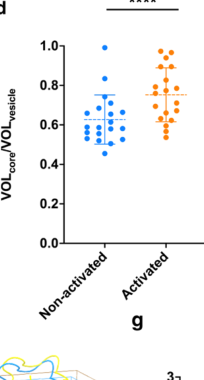

Eosinophil major basic protein 1 (MBP-1), a highly cationic protein (~13.8 kDa, pI ~11.4) that is the predominant constituent of the crystalline core in eosinophil secondary granules. Synthesized as a 222-amino acid precursor with an acidic, heavily glycosylated prosegment (~9 kDa) that neutralizes the toxicity of the basic mature domain during biosynthesis. The prosegment contains N-linked, O-linked, and glycosaminoglycan chains (hence "proteoglycan 2"), raising precursor mass to 30-50 kDa. Upon maturation, the prosegment is proteolytically cleaved in the Golgi/secretory granule, yielding the active 117-residue MBP that is stored in paracrystalline arrays within granules. Structurally, MBP adopts a C-type lectin-like fold but lacks Ca2+-binding sites; instead presents a highly cationic surface for binding sulfated polysaccharides like heparin and heparan sulfate. Primary function: cytotoxic effector in antiparasitic defense - directly damages helminth larvae membranes and cuticles (experimental knockout mice show impaired killing of Strongyloides and filarial worms). Also exhibits broad antimicrobial activity against bacteria and fungi via membrane disruption. Immunomodulatory roles: triggers degranulation of mast cells and basophils (histamine release), activates neutrophils (superoxide production) and platelets. Toxic to host cells - causes epithelial damage and denudation in allergic diseases. In asthma, acts as allosteric antagonist of M2 muscarinic acetylcholine receptors on parasympathetic neurons, disabling inhibitory feedback and causing bronchospasm and airway hyperresponsiveness. Inhibits heparanase (first known endogenous heparanase inhibitor). In chronic settings, induces TGF-β and MMP-1 expression, promoting fibrosis and tissue remodeling. Dual biology: the proMBP form is abundantly expressed in placenta during pregnancy and secreted into maternal circulation, where it forms disulfide-linked 1:1 complexes with PAPP-A (pregnancy-associated plasma protein A), inhibiting this metalloprotease's cleavage of IGFBPs and thereby modulating IGF signaling for fetal growth. ProMBP also binds angiotensinogen and complement C3dg. The PAPP-A/proMBP complex is a clinical biomarker in first-trimester Down syndrome screening. ProMBP is non-toxic (acidic prosegment renders it inert), contrasting with the highly cytotoxic mature MBP released from eosinophils. MBP levels correlate with disease severity in asthma, eosinophilic esophagitis, and other eosinophil-driven conditions.
Definition: The activity of directly killing or damaging target cells or organisms through membrane permeabilization or disruption, particularly via cationic charge-based interactions, as exhibited by antimicrobial peptides and granule proteins.
Justification: MBP's primary function is direct killing of parasites and microbes via membrane permeabilization. Current GO lacks specific term for this cationic antimicrobial peptide-like activity. Knockout mice show impaired parasite killing; purified MBP kills helminths, bacteria, fungi, and mammalian cells via membrane disruption.
Parent term: molecular_function
Definition: The activity of binding to M2 muscarinic acetylcholine receptors and blocking their inhibitory function, thereby preventing feedback inhibition of acetylcholine release from parasympathetic neurons.
Justification: MBP's allosteric antagonism of M2 receptors on airway nerves is a key mechanism in asthma pathophysiology, but lacks specific GO annotation. MBP binds M2 receptors, blocks inhibitory feedback, causes unrestrained acetylcholine release and bronchospasm. Heparin neutralization of MBP prevents this effect.
Parent term: neurotransmitter receptor activity
| GO Term | Evidence | Action | Reason |
|---|---|---|---|
|
GO:0002376
immune system process
|
IEA
GO_REF:0000043 |
ACCEPT |
Summary: Electronic annotation for immune system process from UniProt keywords. MBP is central to eosinophil-mediated immunity.
Reason: Core biological process - MBP is key effector in antiparasitic and antimicrobial defense.
Supporting Evidence:
file:human/PRG2/PRG2-deep-research-perplexity-lite.md
See deep research file for comprehensive analysis
|
|
GO:0005576
extracellular region
|
IEA
GO_REF:0000044 |
ACCEPT |
Summary: Extracellular region from UniProt subcellular location. MBP is released from eosinophils and acts extracellularly.
Reason: Core localization - MBP functions in extracellular space after degranulation.
|
|
GO:0006955
immune response
|
IEA
GO_REF:0000002 |
ACCEPT |
Summary: Electronic annotation for immune response from InterPro domain. MBP kills parasites and microbes as part of innate immunity.
Reason: Core function in immune defense, experimentally validated in helminth killing.
Supporting Evidence:
PMID:38885626
Eosinophils have numerous roles in type 2 inflammation depending on their activation states in the blood and airway or after encounter with inflammatory mediators.
file:human/PRG2/PRG2-deep-research-falcon.md
Soluble MBP-1 is described as **cytotoxic** and **membrane-disruptive**, whereas **proMBP-1** and **isolated nanocrystalline cores** of MBP-1 are reported as **nontoxic**, indicating that precursor neutralization plus crystallization are key protective strategies inside the eosinophil.
|
|
GO:0008201
heparin binding
|
IEA
GO_REF:0000043 |
ACCEPT |
Summary: Heparin binding from UniProt keywords. MBP strongly binds heparin and heparan sulfate via cationic surface.
Reason: Core molecular function - crystal structure shows heparin-binding site, physiologically relevant for tissue interactions.
Supporting Evidence:
file:human/PRG2/PRG2-deep-research-falcon.md
MBP-1 retains a **CTL-like carbohydrate-binding region**, but the in situ granule form lacks the canonical acidic residues for **Ca2+-dependent carbohydrate binding**, explaining loss of canonical lectin behavior. By contrast, purified/recrystallized MBP-1 can bind **sulfated sugars such as heparin**.
|
|
GO:0030133
transport vesicle
|
IEA
GO_REF:0000044 |
ACCEPT |
Summary: Transport vesicle from UniProt subcellular location. MBP is in secretory granules.
Reason: Accurate - MBP is stored in eosinophil secondary granules (transport/secretory vesicles).
Supporting Evidence:
file:human/PRG2/PRG2-deep-research-falcon.md
MBP-1 forms the **dense nanocrystalline core** of **eosinophil secretory granules (SGr)** and is stored as **nanocrystals** in resting cells.
|
|
GO:0030246
carbohydrate binding
|
IEA
GO_REF:0000043 |
ACCEPT |
Summary: Carbohydrate binding from UniProt keywords. MBP has C-type lectin-like fold and binds sulfated polysaccharides.
Reason: Structural feature - lectin-like fold binds sulfated carbohydrates.
|
|
GO:0031410
cytoplasmic vesicle
|
IEA
GO_REF:0000043 |
ACCEPT |
Summary: Cytoplasmic vesicle from UniProt keywords. Same as transport vesicle - eosinophil granules.
Reason: Granules are cytoplasmic vesicles, accurate localization.
Supporting Evidence:
PMID:39682685
ITGB2-AS1 deficiency led to impaired eosinophil differentiation, as evidenced by a reduction in cytoplasmic granules and decreased expression of key eosinophil granule proteins, including eosinophil peroxidase (EPX) and major basic protein-1 (MBP-1).
|
|
GO:0042742
defense response to bacterium
|
IEA
GO_REF:0000043 |
ACCEPT |
Summary: Defense response to bacterium from UniProt keywords. MBP has direct antimicrobial activity against Gram+ and Gram- bacteria.
Reason: Experimentally supported - MBP and derived peptides kill bacteria via membrane disruption.
|
|
GO:0005515
protein binding
|
IPI
PMID:12421832 Complex of pregnancy-associated plasma protein-A and the pro... |
MODIFY |
Summary: Protein binding from PMID:7685339 (original PAPP-A/proMBP complex
discovery). Per CLAUDE.md and PR #766 review feedback, the generic
protein-binding term is uninformative — the documented interaction
is proMBP inhibiting PAPP-A metalloprotease, so a more specific MF
term (GO:0008191 metalloendopeptidase inhibitor activity) is
appropriate. Action changed ACCEPT → MODIFY with replacement.
Reason: Seminal paper demonstrating proMBP-PAPP-A disulfide bridge in pregnancy serum; the proMBP form acts as a metalloendopeptidase inhibitor of PAPP-A.
Proposed replacements:
metalloendopeptidase inhibitor activity
Supporting Evidence:
PMID:12421832
2002 Nov 5. Complex of pregnancy-associated plasma protein-A and the proform of eosinophil major basic protein.
PMID:7685339
Circulating human pregnancy-associated plasma protein-A is disulfide-bridged to the proform of eosinophil major basic protein.
|
|
GO:0005515
protein binding
|
IPI
PMID:7685339 Circulating human pregnancy-associated plasma protein-A is d... |
MODIFY |
Summary: Protein binding from PMID:7685339 (original PAPP-A/proMBP complex
discovery). Per CLAUDE.md and PR #766 review feedback, the generic
protein-binding term is uninformative — the documented interaction
is proMBP inhibiting PAPP-A metalloprotease, so a more specific MF
term (GO:0008191 metalloendopeptidase inhibitor activity) is
appropriate. Action changed ACCEPT → MODIFY with replacement.
Reason: Seminal paper demonstrating proMBP-PAPP-A disulfide bridge in pregnancy serum; the proMBP form acts as a metalloendopeptidase inhibitor of PAPP-A.
Proposed replacements:
metalloendopeptidase inhibitor activity
Supporting Evidence:
PMID:12421832
2002 Nov 5. Complex of pregnancy-associated plasma protein-A and the proform of eosinophil major basic protein.
PMID:7685339
Circulating human pregnancy-associated plasma protein-A is disulfide-bridged to the proform of eosinophil major basic protein.
|
|
GO:0002215
defense response to nematode
|
IEA
GO_REF:0000107 |
ACCEPT |
Summary: Defense response to nematode from Ensembl orthology. MBP is critical for killing helminth parasites.
Reason: Core antiparasitic function - knockout mice show impaired killing of Strongyloides and filarial worms.
Supporting Evidence:
file:human/PRG2/PRG2-deep-research-falcon.md
Soluble MBP-1 is described as **cytotoxic** and **membrane-disruptive**, whereas **proMBP-1** and **isolated nanocrystalline cores** of MBP-1 are reported as **nontoxic**, indicating that precursor neutralization plus crystallization are key protective strategies inside the eosinophil.
|
|
GO:0032693
negative regulation of interleukin-10 production
|
IEA
GO_REF:0000107 |
KEEP AS NON CORE |
Summary: Negative regulation of IL-10 production from Ensembl orthology. May reflect immunomodulatory effects.
Reason: Pleiotropic immunomodulation, not direct core function of MBP.
|
|
GO:0032753
positive regulation of interleukin-4 production
|
IEA
GO_REF:0000107 |
KEEP AS NON CORE |
Summary: Positive regulation of IL-4 production from Ensembl orthology. Reflects role in Th2 allergic responses.
Reason: Downstream effect in allergic inflammation, not core molecular function.
|
|
GO:0030021
extracellular matrix structural constituent conferring compression resistance
|
HDA
PMID:28344315 Proteomic characterization of human multiple myeloma bone ma... |
REMOVE |
Summary: ECM structural constituent conferring compression resistance from PMID:28344315 (myeloma bone marrow ECM proteomics).
Reason: Over-annotation from high-throughput proteomics. MBP is not a structural ECM protein, likely contaminant from eosinophils in marrow.
Supporting Evidence:
PMID:28344315
Proteomic characterization of human multiple myeloma bone marrow extracellular matrix.
|
|
GO:0031012
extracellular matrix
|
HDA
PMID:28344315 Proteomic characterization of human multiple myeloma bone ma... |
REMOVE |
Summary: Extracellular matrix from PMID:25037231 (proteomics).
Reason: Same as above - not an ECM component.
Supporting Evidence:
PMID:28344315
Proteomic characterization of human multiple myeloma bone marrow extracellular matrix.
PMID:25037231
Extracellular matrix signatures of human primary metastatic colon cancers and their metastases to liver.
|
|
GO:0030021
extracellular matrix structural constituent conferring compression resistance
|
RCA
PMID:25037231 Extracellular matrix signatures of human primary metastatic ... |
REMOVE |
Summary: ECM structural constituent from PMID:25037231 (colon cancer ECM proteomics). Same as above.
Reason: Over-annotation from proteomics. MBP may bind to ECM via heparan sulfate but is not a structural ECM component.
Supporting Evidence:
PMID:25037231
Extracellular matrix signatures of human primary metastatic colon cancers and their metastases to liver.
|
|
GO:0031012
extracellular matrix
|
HDA
PMID:25037231 Extracellular matrix signatures of human primary metastatic ... |
REMOVE |
Summary: Extracellular matrix from PMID:25037231 (proteomics).
Reason: Same as above - not an ECM component.
Supporting Evidence:
PMID:28344315
Proteomic characterization of human multiple myeloma bone marrow extracellular matrix.
PMID:25037231
Extracellular matrix signatures of human primary metastatic colon cancers and their metastases to liver.
|
|
GO:0005576
extracellular region
|
TAS
Reactome:R-HSA-6800434 |
ACCEPT |
Summary: Extracellular region from PMID:8547309 (rat MBP cloning, showing secreted protein).
Reason: Confirmed secreted protein localization.
Supporting Evidence:
PMID:8547309
Cloning of cDNA for rat eosinophil major basic protein.
|
|
GO:1904813
ficolin-1-rich granule lumen
|
TAS
Reactome:R-HSA-6800434 |
REMOVE |
Summary: Ficolin-1-rich granule lumen from Reactome — this is a neutrophil-
specific granule type, but MBP is in eosinophil granules, not
neutrophils. Per PR #766 review feedback, the prior
KEEP_AS_NON_CORE action contradicted the reasoning that calls this
a likely annotation error; correct action for an inaccurate
annotation is REMOVE.
Reason: Likely annotation error. MBP is in eosinophil granules (specific/
crystalline core), not neutrophil ficolin-rich granules. The
eosinophil specific granule and secretory granule annotations
elsewhere in the review accurately capture MBP localization.
|
|
GO:0070062
extracellular exosome
|
HDA
PMID:23533145 In-depth proteomic analyses of exosomes isolated from expres... |
REMOVE |
Summary: Extracellular exosome from PMID:23533145 (prostatic secretion exosome proteomics).
Reason: Over-annotation from high-throughput study. MBP not normally in exosomes, likely contamination.
Supporting Evidence:
PMID:23533145
2013 Apr 23. In-depth proteomic analyses of exosomes isolated from expressed prostatic secretions in urine.
|
|
GO:0030246
carbohydrate binding
|
TAS
PMID:1565101 Purification and cDNA cloning of a novel factor produced by ... |
ACCEPT |
Summary: Carbohydrate binding with traceable author statement from PMID:1565101 (original characterization).
Reason: Experimentally demonstrated carbohydrate binding activity.
Supporting Evidence:
PMID:1565101
Purification and cDNA cloning of a novel factor produced by a human T-cell hybridoma: sequence homology with animal lectins.
|
|
GO:0005576
extracellular region
|
TAS
PMID:8547309 Cloning of cDNA for rat eosinophil major basic protein. |
ACCEPT |
Summary: Extracellular region from PMID:8547309 (rat MBP cloning, showing secreted protein).
Reason: Confirmed secreted protein localization.
Supporting Evidence:
PMID:8547309
Cloning of cDNA for rat eosinophil major basic protein.
|
The research report should be a detailed narrative explaining the function, biological processes, and localization of the gene product. Citations should be given for all claims.
You should prioritize authoritative reviews and primary scientific literature when conducting research. You can supplement
this with annotations you find in gene/protein databases, but these can be outdated or inaccurate.
We are specifically interested in the primary function of the gene - for enzymes, what reaction is catalyzed, and what is the substrate specificity? For transporters, what is the substrate? For structural proteins or adapters, what is the broader structural role? For signaling molecules, what is the role in the pathway.
We are interested in where in or outside the cell the gene product carries out its function.
We are also interested in the signaling or biochemical pathways in which the gene functions. We are less interested in broad pleiotropic effects, except where these elucidate the precise role.
Include evidence where possible. We are interested in both experimental evidence as well as inference from structure, evolution, or bioinformatic analysis. Precise studies should be prioritized over high-throughput, where available.
PRG2 encodes eosinophil granule major basic protein-1 (MBP-1), produced as a 222-aa precursor (proMBP-1, also described as bone marrow proteoglycan-2) and processed by removal of an acidic N-terminal propiece to yield a 117-aa, highly cationic mature toxin (pI ~11.4; net charge ~+15 at pH 7). (yang2024insitucrystalline pages 1-5, yang2024insitucrystalline pages 14-18). A key contemporary insight is that eosinophils store MBP-1 as nanocrystals within secretory granules, which appear to neutralize toxicity intracellularly and undergo activation-dependent structural remodeling and extrusion upon stimulation (including IL-33). (yang2024insitucrystalline pages 1-5, yang2024insitucrystalline pages 11-14, yang2024insitucrystalline media fbcec939). In disease contexts, MBP deposition is implicated in airway epithelial injury and remodeling in asthma, and PRG2 genetic variation can influence eosinophil morphology and even eosinophil counts in humans. (steffan2024eosinophilepithelialcellinteractions pages 11-12, marongiu2023gwasofgenetic pages 4-5).
The gene symbol PRG2 in humans corresponds to proteoglycan 2 and the eosinophil granule toxin major basic protein-1 (MBP-1; EMBP), matching the UniProt P13727 description provided in the prompt. This identity is explicitly used in recent structural and genetic literature. (yang2024insitucrystalline pages 1-5, marongiu2023gwasofgenetic pages 4-5).
PRG2 is synthesized as proMBP-1 (222 residues) containing an acidic N-terminal propiece and a highly basic C-terminal CTL-like domain that becomes the mature MBP-1 after propiece cleavage. Mature MBP-1 is reported as 117 residues, pI ~11.4, with net charge ~+15 at pH 7. (yang2024insitucrystalline pages 1-5, yang2024insitucrystalline pages 14-18). Functionally, this precursor strategy is consistent with intracellular neutralization of a potent cationic cytotoxin until it is packaged for controlled release. (yang2024insitucrystalline pages 1-5).
MBP-1 adopts an unusual C-type lectin-like (CTL) fold. The in situ granular structure (PDB 9DKZ) comprises two main α-helices, seven β-strands, six loops, and disulfide bonds stabilizing the CTL topology. (yang2024insitucrystalline pages 44-49, yang2024insitucrystalline media 34e1adf2). A key mechanistic feature is a loop pocket (including a cis-Pro190 stabilized by proline–aromatic interactions) that contributes to crystal packing and differs from prior purified/in vitro forms. (yang2024insitucrystalline pages 14-18, yang2024insitucrystalline pages 11-14).
MBP-1 forms the dense nanocrystalline core of eosinophil secretory granules (SGr) and is stored as nanocrystals in resting cells. (yang2024insitucrystalline pages 1-5, yang2024insitucrystalline pages 11-14). Activated eosinophils can show free, membrane-less crystalline cores, consistent with crystal extrusion during degranulation. (yang2024insitucrystalline pages 5-8).
A major advance is the in situ crystalline structure of human MBP-1 directly inside secretory granules using correlative cryo-electron tomography and MicroED, resolving how MBP-1 packs and stabilizes into nanocrystals and how activation leads to remodeling and extrusion. (yang2024insitucrystalline pages 1-5, yang2024insitucrystalline pages 44-49, yang2024insitucrystalline pages 5-8).
Quantitatively, IL-33 activation is associated with an increased nanocrystal volume fraction within granules: VOLcore/VOLvesicle = 0.62 ± 0.12 (non-activated) vs 0.75 ± 0.13 (activated). (yang2024insitucrystalline media fbcec939). These data support a model where crystal expansion/disassembly is coupled to degranulation and release. (yang2024insitucrystalline pages 11-14, yang2024insitucrystalline media fbcec939).
A 2023 GWAS in Sardinians identified PRG2 (MBP-1) as the locus for a strong signal affecting eosinophil morphology. A Sardinian-specific nonsynonymous variant PRG2 p.Ser148Pro was associated with altered eosinophil granularity/morphology; homozygotes for rs769591668-C were reported to have absent or very low eosinophil counts. Mechanistic modeling suggested altered protein dynamics and contact networks (e.g., disrupted Tyr109 contact and altered solvent exposure of Asp176). (marongiu2023gwasofgenetic pages 4-5, marongiu2023gwasofgenetic pages 7-7).
In a 2024 study of eosinophil differentiation regulation by the lncRNA ITGB2-AS1, stable knockdown in HL-60c15 cells differentiated toward eosinophil-like cells caused loss of specific granules and reduced staining for granule proteins including MBP-1 (PRG2). (fettrelet2024evidencefora pages 2-4, fettrelet2024evidencefora pages 13-15). This supports the use of PRG2/MBP-1 as a functional differentiation marker tied to granule biogenesis rather than only a bystander product. (fettrelet2024evidencefora pages 13-15).
Soluble MBP-1 is described as cytotoxic and membrane-disruptive, whereas proMBP-1 and isolated nanocrystalline cores of MBP-1 are reported as nontoxic, indicating that precursor neutralization plus crystallization are key protective strategies inside the eosinophil. (yang2024insitucrystalline pages 1-5, yang2024insitucrystalline pages 14-18).
IL-33 activation is linked to directional lattice expansion and nanocrystal disassembly, accompanying release of granule contents via piecemeal degranulation and/or compound exocytosis. (yang2024insitucrystalline pages 11-14). The measured increase in crystal-to-granule volume fraction provides quantitative support that crystal physical state changes during activation. (yang2024insitucrystalline media fbcec939).
A 2024 asthma-focused review describes MBP (PRG2) as a mediator of airway epithelial injury: classical experiments showed MBP-induced ciliostasis, ciliary exfoliation, epithelial disruption/detachment, and similarities to epithelial damage observed in asthma. MBP deposition has been reported on damaged bronchial epithelium including fatal asthma cases, supporting clinical relevance. (steffan2024eosinophilepithelialcellinteractions pages 11-12). Beyond direct toxicity, at sub-cytotoxic concentrations MBP can increase epithelial remodeling mediators (e.g., ET-1 and PDGF-related signals) and remodeling-associated genes/proteins (including MMP9), consistent with a role in airway remodeling and hyperreactivity. (steffan2024eosinophilepithelialcellinteractions pages 11-12).
The 2024 in situ study provides a real-world workflow for functional annotation: cryo-FIB milling, MicroED diffraction, and montage cryo-ET to connect subcellular context with near-atomic structure of PRG2/MBP-1 in its native storage form. (yang2024insitucrystalline pages 5-8, yang2024insitucrystalline media 34e1adf2).
The 2024 HL-60 differentiation study reports practical PRG2 measurement via confocal immunofluorescence using monoclonal anti-PRG2 and quantification of per-cell mean fluorescence intensity, illustrating a tractable assay for PRG2 protein in differentiation studies. (fettrelet2024evidencefora pages 7-9).
The 2024 in situ structural analysis supports a modern view that PRG2 biology is inseparable from its physical state (soluble vs crystalline) and subcellular packaging (granule nanocrystal), with activation-dependent changes in crystal packing and volume consistent with a regulated release mechanism. (yang2024insitucrystalline pages 1-5, yang2024insitucrystalline media fbcec939).
The 2024 asthma review provides an expert synthesis linking MBP (PRG2) to airway epithelial injury and remodeling programs, implying PRG2 products are not just eosinophil markers but plausible causal mediators in type-2 airway pathology. (steffan2024eosinophilepithelialcellinteractions pages 11-12).
The table below consolidates identity, structure, localization, mechanism, and 2023–2024 highlights.
| Aspect | Key points | Evidence |
|---|---|---|
| Verified identity | Human PRG2 corresponds to proteoglycan 2 / eosinophil granule major basic protein-1 (MBP-1); literature also refers to the precursor as proMBP-1 and bone marrow proteoglycan-2. Marongiu 2023 explicitly identifies PRG2 as eosinophil granule major basic protein (MBP-1). | (yang2024insitucrystalline pages 1-5, marongiu2023gwasofgenetic pages 4-5) |
| Precursor processing | PRG2 is produced as a 222-residue precursor (proMBP-1) that matures by cleavage of an acidic N-terminal propiece, yielding the 117-residue mature MBP-1, which is highly cationic (pI ~11.4; net charge about +15 at pH 7). The propiece hinders intermolecular interactions needed for crystal packing. | (yang2024insitucrystalline pages 1-5, yang2024insitucrystalline pages 14-18, yang2024insitucrystalline pages 49-52) |
| Domain architecture / fold | Mature MBP-1 adopts an unusual C-type lectin-like (CTL) fold. The in situ structure contains 2 main α-helices, 7 β-strands, 6 loops, and 2 disulfide bonds (Cys125-Cys220 and Cys197-Cys212). | (yang2024insitucrystalline pages 1-5, yang2024insitucrystalline pages 44-49) |
| Carbohydrate-binding region | MBP-1 retains a CTL-like carbohydrate-binding region, but the in situ granule form lacks the canonical acidic residues for Ca2+-dependent carbohydrate binding, explaining loss of canonical lectin behavior. By contrast, purified/recrystallized MBP-1 can bind sulfated sugars such as heparin. | (yang2024insitucrystalline pages 14-18, yang2024insitucrystalline pages 11-14, yang2024insitucrystalline pages 5-8) |
| Key structural determinants | A distinctive L4/L3 loop pocket stabilizes cis-Pro190 through proline-aromatic interactions involving residues such as Trp185 and Trp191; these features contribute to crystal packing. Local conformational differences distinguish the in situ granule form from prior in vitro crystal structures. | (yang2024insitucrystalline pages 44-49, yang2024insitucrystalline pages 14-18, yang2024insitucrystalline pages 11-14, yang2024insitucrystalline pages 49-52) |
| Subcellular localization | MBP-1 is localized to eosinophil secretory granules (SGr), where it forms the electron-dense crystalline core of the granule. Expression data cited in Marongiu 2023 place PRG2 in granulocytes/eosinophils. | (yang2024insitucrystalline pages 1-5, marongiu2023gwasofgenetic pages 4-5, yang2024insitucrystalline pages 11-14) |
| Storage form | In resting eosinophils, MBP-1 is stored as dense nanocrystals; activated cells can show membrane-less/free crystalline cores. The crystal occupies a large fraction of the granule volume, increasing from 0.62 ± 0.12 in non-activated granules to 0.75 ± 0.13 in activated granules. | (yang2024insitucrystalline pages 1-5, yang2024insitucrystalline pages 11-14, yang2024insitucrystalline pages 5-8, yang2024insitucrystalline media fbcec939) |
| Functional rationale for crystallization | Soluble MBP-1 is cytotoxic and membrane-disruptive, whereas proMBP-1 and the isolated nanocrystalline cores are reported as nontoxic. This supports the idea that intracellular crystallization protects eosinophils from the protein's non-selective toxicity until release. | (yang2024insitucrystalline pages 1-5, yang2024insitucrystalline pages 14-18) |
| Release / degranulation mechanism | IL33 activation is associated with directional lattice expansion, nanocrystal disassembly, and extrusion/release of MBP-1 crystals during eosinophil degranulation, including piecemeal degranulation and compound exocytosis. Free crystals in activated cells diffract to about 3 Å. | (yang2024insitucrystalline pages 11-14, yang2024insitucrystalline pages 5-8, yang2024insitucrystalline media fbcec939) |
| Additional molecular interactions | proMBP-1 can form a complex with PAPP-A through interactions involving proline-rich motifs in PAPP-A; this is structurally distinct from the granule crystal-packing interactions of mature MBP-1. | (yang2024insitucrystalline pages 14-18, yang2024insitucrystalline pages 49-52) |
| 2024 structural advance | Yang 2024 reported the first in situ structure of crystalline human gMBP-1 within secretory granules, using cryo-ET, cryo-FIB, and MicroED. The granule structure was solved at about 3.2 Å merged-map resolution and deposited as PDB 9DKZ. | (yang2024insitucrystalline pages 44-49, yang2024insitucrystalline pages 5-8, yang2024insitucrystalline media 1e43939b, yang2024insitucrystalline media 34e1adf2) |
| 2023 human genetics advance | Marongiu 2023 identified a Sardinian PRG2 p.Ser148Pro variant associated with altered eosinophil morphology/reduced granularity and reported that homozygotes for rs769591668-C had absent or very low eosinophil counts. Modeling suggested altered atomic fluctuations, disrupted Tyr109 contact, and increased Asp176 solvent exposure. | (marongiu2023gwasofgenetic pages 4-5, marongiu2023gwasofgenetic pages 7-7) |
| Overall current understanding | PRG2 encodes a granule-packaged eosinophil effector protein whose biology depends on precursor neutralization, crystalline intragranular storage, and activation-triggered crystal remodeling/release. Recent structural and human-variant studies link its molecular architecture directly to granule packing, eosinophil morphology, and degranulation behavior. | (yang2024insitucrystalline pages 1-5, marongiu2023gwasofgenetic pages 4-5, yang2024insitucrystalline pages 11-14, yang2024insitucrystalline media 34e1adf2) |
Table: This table compiles the key verified facts for human PRG2/MBP-1 from the provided 2023-2024 evidence only. It is useful as a compact reference for identity, structure, localization, mechanism, and recent developments directly tied to the cited sources.
References
(yang2024insitucrystalline pages 1-5): Jie E. Yang, Joshua M. Mitchell, Craig A. Bingman, Deane F. Mosher, and Elizabeth R. Wright. In situ crystalline structure of the human eosinophil major basic protein-1. bioRxiv, Oct 2024. URL: https://doi.org/10.1101/2024.10.09.617336, doi:10.1101/2024.10.09.617336. This article has 4 citations.
(yang2024insitucrystalline pages 14-18): Jie E. Yang, Joshua M. Mitchell, Craig A. Bingman, Deane F. Mosher, and Elizabeth R. Wright. In situ crystalline structure of the human eosinophil major basic protein-1. bioRxiv, Oct 2024. URL: https://doi.org/10.1101/2024.10.09.617336, doi:10.1101/2024.10.09.617336. This article has 4 citations.
(yang2024insitucrystalline pages 11-14): Jie E. Yang, Joshua M. Mitchell, Craig A. Bingman, Deane F. Mosher, and Elizabeth R. Wright. In situ crystalline structure of the human eosinophil major basic protein-1. bioRxiv, Oct 2024. URL: https://doi.org/10.1101/2024.10.09.617336, doi:10.1101/2024.10.09.617336. This article has 4 citations.
(yang2024insitucrystalline media fbcec939): Jie E. Yang, Joshua M. Mitchell, Craig A. Bingman, Deane F. Mosher, and Elizabeth R. Wright. In situ crystalline structure of the human eosinophil major basic protein-1. bioRxiv, Oct 2024. URL: https://doi.org/10.1101/2024.10.09.617336, doi:10.1101/2024.10.09.617336. This article has 4 citations.
(steffan2024eosinophilepithelialcellinteractions pages 11-12): Breanne N. Steffan, Elizabeth A. Townsend, Loren C. Denlinger, and Mats W. Johansson. Eosinophil-epithelial cell interactions in asthma. International Archives of Allergy and Immunology, 185:1033-1047, Jun 2024. URL: https://doi.org/10.1159/000539309, doi:10.1159/000539309. This article has 14 citations and is from a peer-reviewed journal.
(marongiu2023gwasofgenetic pages 4-5): Michele Marongiu, Gonzalo Pérez-Mejías, Valeria Orrù, Maristella Steri, Carlo Sidore, Antonio Díaz-Quintana, Antonella Mulas, Fabio Busonero, Andrea Maschio, Klaudia Walter, Manuel Tardaguila, Parsa Akbari, Nicole Soranzo, Edoardo Fiorillo, Myriam Gorospe, David Schlessinger, Irene Díaz-Moreno, Francesco Cucca, and Magdalena Zoledziewska. Gwas of genetic factors affecting white blood cell morphological parameters in sardinians uncovers influence of chromosome 11 innate immunity gene cluster on eosinophil morphology. Sep 2023. URL: https://doi.org/10.1093/hmg/ddac238, doi:10.1093/hmg/ddac238. This article has 5 citations and is from a domain leading peer-reviewed journal.
(yang2024insitucrystalline pages 44-49): Jie E. Yang, Joshua M. Mitchell, Craig A. Bingman, Deane F. Mosher, and Elizabeth R. Wright. In situ crystalline structure of the human eosinophil major basic protein-1. bioRxiv, Oct 2024. URL: https://doi.org/10.1101/2024.10.09.617336, doi:10.1101/2024.10.09.617336. This article has 4 citations.
(yang2024insitucrystalline media 34e1adf2): Jie E. Yang, Joshua M. Mitchell, Craig A. Bingman, Deane F. Mosher, and Elizabeth R. Wright. In situ crystalline structure of the human eosinophil major basic protein-1. bioRxiv, Oct 2024. URL: https://doi.org/10.1101/2024.10.09.617336, doi:10.1101/2024.10.09.617336. This article has 4 citations.
(yang2024insitucrystalline pages 5-8): Jie E. Yang, Joshua M. Mitchell, Craig A. Bingman, Deane F. Mosher, and Elizabeth R. Wright. In situ crystalline structure of the human eosinophil major basic protein-1. bioRxiv, Oct 2024. URL: https://doi.org/10.1101/2024.10.09.617336, doi:10.1101/2024.10.09.617336. This article has 4 citations.
(marongiu2023gwasofgenetic pages 7-7): Michele Marongiu, Gonzalo Pérez-Mejías, Valeria Orrù, Maristella Steri, Carlo Sidore, Antonio Díaz-Quintana, Antonella Mulas, Fabio Busonero, Andrea Maschio, Klaudia Walter, Manuel Tardaguila, Parsa Akbari, Nicole Soranzo, Edoardo Fiorillo, Myriam Gorospe, David Schlessinger, Irene Díaz-Moreno, Francesco Cucca, and Magdalena Zoledziewska. Gwas of genetic factors affecting white blood cell morphological parameters in sardinians uncovers influence of chromosome 11 innate immunity gene cluster on eosinophil morphology. Sep 2023. URL: https://doi.org/10.1093/hmg/ddac238, doi:10.1093/hmg/ddac238. This article has 5 citations and is from a domain leading peer-reviewed journal.
(fettrelet2024evidencefora pages 2-4): Timothée Fettrelet, Aref Hosseini, Jacqueline Wyss, Joanna Boros-Majewska, Darko Stojkov, Shida Yousefi, and Hans-Uwe Simon. Evidence for a role of the long non-coding rna itgb2-as1 in eosinophil differentiation and functions. Cells, Nov 2024. URL: https://doi.org/10.3390/cells13231936, doi:10.3390/cells13231936. This article has 2 citations.
(fettrelet2024evidencefora pages 13-15): Timothée Fettrelet, Aref Hosseini, Jacqueline Wyss, Joanna Boros-Majewska, Darko Stojkov, Shida Yousefi, and Hans-Uwe Simon. Evidence for a role of the long non-coding rna itgb2-as1 in eosinophil differentiation and functions. Cells, Nov 2024. URL: https://doi.org/10.3390/cells13231936, doi:10.3390/cells13231936. This article has 2 citations.
(yip2023newbornswithfavourable pages 12-14): Ping K. Yip, Michael Bremang, Ian Pike, Vennila Ponnusamy, Adina T. Michael-Titus, and Divyen K. Shah. Newborns with favourable outcomes after perinatal asphyxia have upregulated glucose metabolism-related proteins in plasma. Biomolecules, 13:1471, Sep 2023. URL: https://doi.org/10.3390/biom13101471, doi:10.3390/biom13101471. This article has 4 citations.
(kim2020theamnioticfluid pages 6-7): Sun Min Kim, Byoung-Kyu Cho, Byoung Jae Kim, Ha Yun Lee, Errol R. Norwitz, Min Jueng Kang, Seung Mi Lee, Chan-Wook Park, Jong Kwan Jun, Eugene C. Yi, and Joong Shin Park. The amniotic fluid proteome differs significantly between donor and recipient fetuses in pregnancies complicated by twin-to-twin transfusion syndrome. Journal of Korean Medical Science, Feb 2020. URL: https://doi.org/10.3346/jkms.2020.35.e73, doi:10.3346/jkms.2020.35.e73. This article has 6 citations and is from a peer-reviewed journal.
(fettrelet2024evidencefora pages 7-9): Timothée Fettrelet, Aref Hosseini, Jacqueline Wyss, Joanna Boros-Majewska, Darko Stojkov, Shida Yousefi, and Hans-Uwe Simon. Evidence for a role of the long non-coding rna itgb2-as1 in eosinophil differentiation and functions. Cells, Nov 2024. URL: https://doi.org/10.3390/cells13231936, doi:10.3390/cells13231936. This article has 2 citations.
(yang2024insitucrystalline pages 49-52): Jie E. Yang, Joshua M. Mitchell, Craig A. Bingman, Deane F. Mosher, and Elizabeth R. Wright. In situ crystalline structure of the human eosinophil major basic protein-1. bioRxiv, Oct 2024. URL: https://doi.org/10.1101/2024.10.09.617336, doi:10.1101/2024.10.09.617336. This article has 4 citations.
(yang2024insitucrystalline media 1e43939b): Jie E. Yang, Joshua M. Mitchell, Craig A. Bingman, Deane F. Mosher, and Elizabeth R. Wright. In situ crystalline structure of the human eosinophil major basic protein-1. bioRxiv, Oct 2024. URL: https://doi.org/10.1101/2024.10.09.617336, doi:10.1101/2024.10.09.617336. This article has 4 citations.

The PRG2 gene (Proteoglycan 2) encodes eosinophil major basic protein 1 (MBP-1), a highly cationic protein that is the predominant constituent of the crystalline core in eosinophil granules (www.ncbi.nlm.nih.gov). MBP-1 is often simply called Major Basic Protein for its abundance and strong basicity; it is also known as bone marrow proteoglycan (BMPG) and was historically termed pregnancy-associated major basic protein due to its presence in the placenta (www.reactome.org). The mature MBP-1 protein is relatively small (~13.8 kDa) and extremely basic (isoelectric point ≈11.4) (pmc.ncbi.nlm.nih.gov). It is stored in eosinophils – a type of white blood cell – and released during immune responses. Broadly, MBP-1 serves dual roles as a toxic effector molecule in host defense (particularly against parasites) and as a mediator of inflammatory tissue damage in allergic conditions (www.ncbi.nlm.nih.gov). The PRG2 gene product is therefore central to eosinophil function, with a unique biology that spans roles in immunity, inflammation, and even pregnancy.
PRG2/MBP-1 is synthesized as a precursor (prepro-MBP) that undergoes post-translational processing. The nascent polypeptide (222 amino acids in humans) includes an N-terminal signal peptide and a prosegment (~9 kDa) followed by the C-terminal mature MBP (~117 amino acids) (pmc.ncbi.nlm.nih.gov). The prosegment is acidic and heavily glycosylated, in stark contrast to the arginine-rich basic mature domain (pmc.ncbi.nlm.nih.gov) (pmc.ncbi.nlm.nih.gov). This charge polarization is so extreme that the protein has been likened to a “magnet” of opposing ends (pubmed.ncbi.nlm.nih.gov). Functionally, the acidic pro-piece is thought to neutralize the toxicity of MBP during its synthesis and packaging – essentially acting as an intramolecular chaperone to protect the eosinophil from its own toxic protein (pmc.ncbi.nlm.nih.gov). Indeed, the prosegment carries multiple glycans (N-linked, O-linked, and even glycosaminoglycan chains), which raise the precursor’s molecular mass to ~30–50 kDa and mask the highly basic charge of MBP (pmc.ncbi.nlm.nih.gov). This explains the gene’s name “proteoglycan 2.” Upon eosinophil maturation, the prosegment is proteolytically cleaved in the Golgi/secretory granule, yielding the active 13.8-kDa MBP that is stored in granules (pmc.ncbi.nlm.nih.gov) (pmc.ncbi.nlm.nih.gov). Notably, the proMBP remains non-covalently associated until granule storage is complete. Both the full-length proMBP and the crystallized form of MBP are non-toxic inside the cell, whereas the freed, soluble MBP is highly cytotoxic (pmc.ncbi.nlm.nih.gov). This clever strategy ensures that eosinophils can produce and stockpile a potent toxin without self-harm.
Structurally, mature MBP-1 has an fold similar to C-type lectins (carbohydrate-binding proteins), although it is not a classical calcium-dependent lectin (pmc.ncbi.nlm.nih.gov). Crystal structure analysis revealed that MBP-1’s topology aligns with the lectin family, sharing weak sequence homology (~23–28%) to C-type lectin domains and even to the low-affinity IgE receptor CD23 (pmc.ncbi.nlm.nih.gov). However, MBP lacks the Ca²⁺-binding sites of typical lectins and instead presents a highly cationic surface for ligand binding (pmc.ncbi.nlm.nih.gov). In fact, MBP-1 can bind strongly to sulfated polysaccharides like heparin and heparan sulfate (pmc.ncbi.nlm.nih.gov). A co-crystal of MBP-1 with a heparin fragment showed the basic region engaging the sulfate groups, suggesting that heparan sulfate in tissues or on pathogens may be a physiological ligand (pmc.ncbi.nlm.nih.gov). This heparin-binding property is also pharmacologically relevant: polyanionic compounds (e.g. heparin or polyglutamate) readily bind and neutralize MBP’s positive charges, thereby inhibiting its toxic effects (pmc.ncbi.nlm.nih.gov).
Cellular localization: Within eosinophils, MBP-1 is stored in large secondary (specific) granules. It is highly concentrated in the electron-dense crystalline core of these granules, forming paracrystalline arrays due to its propensity to self-aggregate (pmc.ncbi.nlm.nih.gov). Electron microscopy of mature eosinophils shows each granule with a dense core composed largely of MBP-1, surrounded by a matrix containing other eosinophil proteins. MBP-1 is the single most abundant protein in these granule cores (www.ncbi.nlm.nih.gov). This crystalline packing not only fits a large amount of protein into the granule, but also keeps MBP sequestered in an inactive crystalline state until the eosinophil is activated.
Secretion: Upon eosinophil activation (for example, by parasites, allergens, or cytokine stimuli), MBP-1 is released by degranulation. The protein then localizes to the extracellular space at sites of inflammation or infection. In disease settings like allergic asthma, substantial amounts of MBP are found in fluids and tissues – it has been detected in bronchoalveolar lavage fluid, sputum, and tissue sections where eosinophils have degranulated (pmc.ncbi.nlm.nih.gov). MBP can also adhere to cell surfaces: an older study showed MBP coating the surface of basophils in some conditions (pmc.ncbi.nlm.nih.gov), and MBP released in tissues may bind to negatively charged matrix components (consistent with its heparan sulfate affinity). In short, MBP is stored intracellularly in eosinophils but carries out its functions extracellularly after secretion.
Tissue expression: PRG2 is predominantly expressed in eosinophil-lineage cells (developing in the bone marrow under IL-5 stimulation). However, a remarkable aspect of PRG2 is its high expression in the placenta during pregnancy. In fact, PRG2 is among the most highly expressed genes in the placenta, and its product (proMBP) is released into the maternal circulation (pubmed.ncbi.nlm.nih.gov). In pregnancy, proMBP is found in serum as part of large protein complexes (described below). Low levels of circulating proMBP in the first trimester have been linked to adverse outcomes such as Down syndrome, highlighting its value as a biomarker (pubmed.ncbi.nlm.nih.gov). Outside of pregnancy, healthy individuals have very low levels of proMBP in blood; by contrast, in eosinophil-associated diseases (like hypereosinophilic syndrome or parasitic infections), elevated MBP can sometimes be detected in serum or urine as a result of mass eosinophil degranulation (www.genecards.org) (www.ncbi.nlm.nih.gov).
One of the primary roles of MBP-1 is in host defense against parasites, especially helminth worms. Eosinophils accumulate during parasitic infections, and MBP is a key toxin they deploy. MBP is directly toxic to many parasites (helminths) – it can damage or kill parasite larvae by disrupting their outer membranes and cuticle (pmc.ncbi.nlm.nih.gov). In vitro, purified MBP causes marked ultrastructural damage to schistosome larvae and other helminths, correlating with eosinophils’ known ability to kill these parasites. In vivo experimental evidence strongly supports MBP’s anti-parasitic function. For example, in a mouse model of Strongyloides worm infection, eosinophils use an MBP-dependent mechanism to kill the larvae: mice lacking MBP show significantly impaired larval killing compared to wild-type (pmc.ncbi.nlm.nih.gov). Similarly, a recent study demonstrated that eosinophils from mice knockout for MBP-1 have a diminished ability to immobilize and kill filarial worm microfilariae. Eosinophil extracellular traps (DNA-based nets) from MBP-deficient mice were much less effective at ensnaring parasites, and supplementation of exogenous MBP restored parasite killing in a dose-dependent manner (pmc.ncbi.nlm.nih.gov). These findings confirm that MBP is a crucial effector molecule for anti-helminth immunity in mammals.
Beyond worms, MBP-1 exhibits broad antimicrobial activity. The protein’s strong cationic nature allows it to bind and disrupt microbial cell membranes, akin to a host defense peptide. Indeed, MBP has demonstrated potent cytotoxic effects on bacteria and fungi as well (www.ncbi.nlm.nih.gov). Notably, the MBP sequence contains a region that acts like an antimicrobial peptide; synthetic peptides derived from MBP can kill both Gram-positive and Gram-negative bacteria, as well as yeast and other fungi (www.ncbi.nlm.nih.gov). Thus, MBP can be considered part of the innate immune arsenal against a range of pathogens. It is one of several eosinophil granule proteins (along with eosinophil cationic protein, eosinophil peroxidase, and eosinophil-derived neurotoxin) that have toxic, non-specific antimicrobial properties. These cationic toxins are thought to supplement the immune response especially in conditions where targets (like large parasites) cannot be easily phagocytosed (pmc.ncbi.nlm.nih.gov). However, their broad toxicity means they can damage host tissues as well, a theme discussed below.
While MBP contributes to parasite killing, it is also a potent immunomodulator that can exacerbate inflammation. MBP released from activated eosinophils influences other immune cells and the surrounding tissue in multiple ways:
Mast cell and basophil activation: MBP can trigger the degranulation of mast cells and basophils without directly lysing them (termed non-cytolytic degranulation). It induces these cells to release histamine and other mediators, which fuel allergic inflammation (www.genecards.org). In laboratory experiments, very low concentrations of MBP provoke significant histamine release from human basophils, linking eosinophil activity to immediate hypersensitivity reactions. This effect helps explain how eosinophils amplify allergic responses – by dumping MBP, they cause mast cells and basophils to further release histamine, leukotrienes, and cytokines, creating a positive feedback loop of inflammation.
Neutrophil and platelet activation: MBP has been shown to activate neutrophils, causing them to produce superoxide (a reactive oxygen species) at an enhanced rate (pmc.ncbi.nlm.nih.gov). It also can cause platelet aggregation and activation (pmc.ncbi.nlm.nih.gov). In fact, a classic study found that purified MBP could directly activate platelets, which may contribute to tissue injury (through microthrombi formation) in eosinophil-rich inflammation. These interactions position MBP as a paracrine signaling molecule that instructs or enhances the activity of other leukocytes.
Epithelial toxicity: MBP is directly toxic to host cells. Its cationic, detergent-like properties allow it to damage mammalian cell membranes, causing cell death or dysfunction (pmc.ncbi.nlm.nih.gov). In tissues infiltrated by eosinophils, MBP can injure epithelial cell layers, leading to denudation (exfoliation) of mucosal surfaces (www.ncbi.nlm.nih.gov). For example, in chronic asthma or eosinophilic esophagitis, MBP released onto airway or esophageal epithelium is implicated in the shedding of epithelial cells and disruption of barrier function. Biopsies from such conditions often show deposition of MBP on damaged epithelium, correlating eosinophil activity with local tissue injury.
Bronchospasm and nerve effects: One of the most significant pathological actions of MBP in asthma is its effect on nerves controlling airway smooth muscle. MBP binds to M2 muscarinic acetylcholine receptors on parasympathetic neurons in the lung and acts as an allosteric antagonist (pmc.ncbi.nlm.nih.gov). Under normal conditions, M2 receptors on vagal nerves serve as an inhibitory feedback mechanism – they limit acetylcholine release and thus prevent excessive bronchoconstriction. MBP, however, can occupy and block these receptors, preventing the inhibitory signal. The result is unrestrained acetylcholine release leading to heightened bronchoconstriction. In essence, MBP causes hyperreactive airways by disabling the “brake” on vagal bronchoconstrictor pathways (www.ncbi.nlm.nih.gov). Experimental studies in guinea pigs and primates have demonstrated this clearly: instilling MBP into the airways causes acute bronchospasm and airway hyperresponsiveness (pmc.ncbi.nlm.nih.gov), whereas administering an MBP-neutralizing antibody or polyanionic heparin protects the animals’ M2 receptors and prevents the bronchospasm (www.ncbi.nlm.nih.gov). This mechanism highlights MBP as a key mediator of the bronchial hyperreactivity characteristic of asthma, linking eosinophil infiltration to nerve dysfunction in the lungs.
Enzyme inhibition and ECM modification: MBP has been found to bind and modulate certain enzymes. Notably, MBP-1 is a potent inhibitor of heparanase, the enzyme that degrades heparan sulfate in extracellular matrices (pmc.ncbi.nlm.nih.gov). In fact, MBP was identified as the first known endogenous heparanase inhibitor in humans (pmc.ncbi.nlm.nih.gov). By binding to heparanase (or to its heparan sulfate substrates), MBP can prevent extracellular matrix degradation. This might limit tissue damage in some contexts, but in others it could interfere with normal tissue remodeling or immune cell migration. MBP also binds to lactoferrin (an iron-binding immune protein) (pmc.ncbi.nlm.nih.gov), though the consequence of this interaction is not fully clear; it might localize MBP to sites rich in lactoferrin (such as inflammatory exudates) or modulate microbial growth indirectly via lactoferrin. These examples illustrate that MBP’s highly charged surface enables it to engage a variety of molecules, sometimes acting as an inhibitor when it forms tight complexes (as seen again with proMBP and PAPP-A below).
Tissue remodeling and fibrosis: In chronic settings, MBP contributes to longer-term changes in tissues. Experiments where MBP was directly introduced into animal airways showed that it can induce expression of TGF-β (a profibrotic cytokine) and matrix metalloproteinase-1 in airway epithelium, promoting fibrosis and tissue remodeling in the bronchi (pmc.ncbi.nlm.nih.gov). Repeated or sustained release of MBP in tissues is thought to drive fibrosis, as seen in asthma (subepithelial fibrosis of airways) and even outside the lung. For instance, in models of muscular dystrophy, eosinophils infiltrate damaged muscle; MBP released by these eosinophils was shown to lyse muscle cells and stimulate fibrosis in the muscle tissue, hindering regeneration (pmc.ncbi.nlm.nih.gov). Thus, MBP can fundamentally alter tissue structure over time, turning an acute inflammatory response into chronic pathological remodeling. This fibrogenic effect is particularly concerning in diseases like eosinophilic gastrointestinal disorders, chronic asthma, or hypereosinophilic syndrome, where prolonged high levels of MBP in tissues lead to scarring and loss of normal organ function.
Collectively, these activities establish MBP as a major mediator of immune pathology: it is instrumental in killing invaders, but it is equally capable of causing collateral damage. Elevated MBP levels have been correlated with disease severity in asthma, eosinophilic esophagitis, atopic dermatitis, and other eosinophil-driven conditions (www.ncbi.nlm.nih.gov). For this reason, MBP (and eosinophil granule proteins in general) are targets of therapeutic interest – for example, therapies that reduce eosinophils (like anti-IL-5 antibodies) ultimately reduce MBP release and can alleviate eosinophil-related tissue damage.
Beyond its role in eosinophils, the PRG2 gene product has a fascinating function in the context of pregnancy. During human pregnancy, the placenta expresses PRG2 abundantly, producing and secreting the proMBP form into the maternal circulation (pubmed.ncbi.nlm.nih.gov). This proform of MBP (often called pregnancy-associated MBP) does not get cleaved and stored in granules, but instead is released as a soluble, circulating protein. In maternal blood, proMBP does not remain free; it forms disulfide-linked complexes with several other proteins, effectively acting as a binding partner and inhibitor. The best-characterized interaction is with pregnancy-associated plasma protein A (PAPP-A), a metalloprotease produced by the placenta. ProMBP and PAPP-A form a 1:1 complex (often referred to as PAPP-A/proMBP) in which proMBP inhibits the protease activity of PAPP-A (www.genecards.org). PAPP-A’s normal function is to cleave insulin-like growth factor binding proteins (IGFBPs), thereby increasing local availability of IGF for fetal growth. By inhibiting PAPP-A, proMBP likely modulates IGF signaling in the placenta, helping to fine-tune fetal growth and maternal adaptation (www.genecards.org).
ProMBP appears to be a broad-range proteinase inhibitor in circulation. In addition to PAPP-A, proMBP binds angiotensinogen (AGT) and complement C3dg (a fragment of complement C3) to form a larger complex (www.ncbi.nlm.nih.gov). In the case of angiotensinogen, studies have noted a high-molecular-weight form of AGT in pregnancy serum that includes proMBP, though the functional consequence is not fully understood (bioone.org). It has been speculated that such complexes could influence blood pressure regulation or immune functions in pregnancy (for example, abnormal PAPP-A/proMBP or AGT/proMBP complexes have been investigated in preeclampsia and pregnancy-induced hypertension (bioone.org)). The binding to C3dg suggests a potential role in the complement system, perhaps by sequestering complement fragments. Overall, proMBP serves as a carrier and inhibitor molecule outside the eosinophil context, a stark contrast to the destructive role of the mature MBP in eosinophils.
From a clinical standpoint, the PAPP-A/proMBP complex is an important biomarker. PAPP-A (historically measured together with proMBP) is used in first-trimester prenatal screening: abnormally low levels of PAPP-A (hence proMBP) in maternal serum are associated with fetal chromosomal abnormalities like Down syndrome and with poor pregnancy outcomes (pubmed.ncbi.nlm.nih.gov). In essence, if the placenta is not producing enough proMBP (and PAPP-A), it can signal placental dysfunction. This has made PRG2 indirectly part of obstetric care protocols – for example, Down syndrome screening tests include measurements of the PAPP-A/proMBP complex in maternal blood (typically at 10–13 weeks of gestation). Outside of pregnancy, there is emerging interest in the proMBP–PAPP-A interaction in other diseases; notably, elevated circulating PAPP-A/proMBP complexes have been observed in patients with cardiovascular disease (e.g. unstable angina or heart failure), where they may have prognostic significance (vbn.aau.dk). This suggests that the PRG2 gene product, via proMBP, might have regulatory roles in other physiological or pathological processes that involve metalloproteinase activity and IGF signaling.
It is worth emphasizing that proMBP itself is not cytotoxic – the acidic prosegment renders it inert as a toxin. In fact, proMBP can be viewed as a natural “inhibitory antibody” of sorts, keeping a dangerous protein (MBP) in a benign, soluble state. Consistent with this, isolated proMBP and the intact MBP crystalloid core are harmless, whereas the released, fully basic MBP is highly toxic to cells (pmc.ncbi.nlm.nih.gov). This dichotomy – a single gene product having a toxic effector form and an inhibitory carrier form – is a remarkable adaptation. It allows PRG2 to play roles in two very different arenas: innate immune defense and endocrine regulation. Evolution may have repurposed this protein, leveraging its strong binding abilities in the bloodstream while exploiting its cytotoxic potential in granulocytes.
The existence of a proform with distinct function hints at evolutionary tinkering. MBP-1 is part of a small gene family in primates. Humans have a paralogous gene, PRG3, which encodes MBP-2, a protein expressed exclusively in eosinophils and highly similar to MBP-1 (pmc.ncbi.nlm.nih.gov). MBP-2 shares ~66% amino acid identity with MBP-1 and is also stored in eosinophil granules. However, MBP-2 is less basic (pI ~8.7) and, in head-to-head comparisons, MBP-1 is more potent in activities like cell killing and triggering mediator release (pmc.ncbi.nlm.nih.gov). The functional redundancy of having two major basic proteins is not fully clear; MBP-2 might serve as a backup or modulate eosinophil activity in subtle ways. Some researchers have proposed using MBP-2 as a more specific marker of eosinophil involvement in disease, since MBP-1 can come from placenta as well (pmc.ncbi.nlm.nih.gov). An interesting finding in mice (which have a single Mbp gene) illustrates a possible evolutionary pressure: mice engineered to lack MBP-1 or eosinophil peroxidase individually still develop eosinophils, but when both toxins were knocked out, the mice could not produce mature eosinophils (pmc.ncbi.nlm.nih.gov). The double-knockout animals had a selective block in eosinophilopoiesis, suggesting that producing these granule proteins is somehow required for eosinophil development or survival (pmc.ncbi.nlm.nih.gov). One hypothesis is that without the major granule proteins, developing eosinophils suffer unstored toxic intermediates or fail a “granule integrity” checkpoint, leading to cell death (pmc.ncbi.nlm.nih.gov). This underscores the idea that the toxic granule proteins (MBP-1, EPO, etc.) co-evolved with the eosinophil lineage and are integral to its identity and viability. In evolutionary terms, PRG2’s protein domain belongs to the C-type lectin superfamily, but it has diverged to acquire unique features (like extreme basic charge and a long anionic propeptide) that equip eosinophils for their specialized role in parasite immunity (pmc.ncbi.nlm.nih.gov).
PRG2/Major Basic Protein 1 emerges as a multifaceted protein central to eosinophil function. Its primary role is as a cytotoxic effector: MBP-1 enables eosinophils to kill parasites and microbes that are too large for phagocytosis, by permeabilizing membranes and disrupting pathogens (pmc.ncbi.nlm.nih.gov) (pmc.ncbi.nlm.nih.gov). This makes it a crucial component of the immune response to helminth infections and certain extracellular microbes. At the same time, MBP-1 is a double-edged sword – when released in our tissues, it can cause collateral damage leading to inflammation, bronchospasm, and tissue remodeling in allergic diseases (pmc.ncbi.nlm.nih.gov) (www.ncbi.nlm.nih.gov). Its ability to activate other immune cells and injure host epithelia links eosinophils to conditions like asthma (where MBP-induced nerve dysfunction causes hyperreactive airways) and atopic dermatitis or chronic urticaria (where MBP damages skin cells and nerve endings, contributing to itching and welts). Thus, MBP is a key mediator of both protective immunity and pathological hypersensitivity.
From a biochemical perspective, PRG2 is a striking example of how nature packs a potent molecule into a safe storage form: the inactive, acidic proMBP ensures that eosinophils don’t self-destruct and even allows the protein to moonlight in the circulation as a metalloproteinase inhibitor (www.genecards.org). In pregnancy, this has vital implications for regulating fetal growth factors and has made proMBP a useful clinical marker for prenatal screening (pubmed.ncbi.nlm.nih.gov). The discovery that proMBP binds PAPP-A and other proteins opened up new understanding of maternal-fetal biology and even suggested roles in cardiovascular disease. Meanwhile, intense research in immunology has solidified MBP’s importance in diseases: for instance, therapies targeting eosinophils (such as anti-IL-5 antibodies like mepolizumab) are effective in part because they reduce MBP levels and thereby reduce eosinophil-driven tissue damage. MBP itself has been studied as a drug target; although neutralizing MBP in vivo is challenging, the knowledge that heparin can bind MBP and mitigate its effects led to studies using heparin or heparin-mimetics to alleviate asthma symptoms (pmc.ncbi.nlm.nih.gov). To date, the most successful approach is upstream – preventing MBP release by controlling eosinophils.
In summary, PRG2 (MBP) is an essential gene in human immunity with a well-defined protein product that acts in specific locations: inside eosinophil granules and at sites of eosinophilic inflammation. Decades of research, from the biochemical characterization of its highly basic, arginine-rich composition to recent high-resolution structural studies of MBP’s crystalline granule core (pmc.ncbi.nlm.nih.gov), have provided a detailed picture of how this protein functions. Current research continues to unveil new aspects – for example, the involvement of MBP in eosinophil extracellular trap formation against filarial worms was shown in 2025 (pmc.ncbi.nlm.nih.gov), and ongoing studies are examining how MBP’s interactions (like with heparan sulfate or cell receptors) can be modulated to treat diseases. MBP exemplifies the delicate balance in our immune system: a powerful “weapon” that, unless tightly regulated, can harm the very host it protects. Its unique features – an inhibitory pro-sequence, a crystal storage form, and a potent cationic effector domain – reflect an evolutionary solution to safely deploy a toxic protein. As both a helminthotoxin and a contributor to asthma and allergy, PRG2’s product remains a focus of immunological research and a consideration in diseases ranging from parasitic infections to allergic inflammation. The comprehensive understanding of PRG2/MBP-1 is not only of academic interest but also has practical implications for diagnosing and managing conditions where eosinophils play a central role.
References: Publications and databases providing information on PRG2/MBP include peer-reviewed reviews and studies (e.g., Acharya & Ackerman 2014 in J. Biol. Chem. (pmc.ncbi.nlm.nih.gov) (pmc.ncbi.nlm.nih.gov) (pmc.ncbi.nlm.nih.gov), O’Connell et al. 2011 (pmc.ncbi.nlm.nih.gov), Schumacher et al. 2025 (pmc.ncbi.nlm.nih.gov)), authoritative databases (NCBI RefSeq summary (www.ncbi.nlm.nih.gov), UniProtKB entry P13727 (www.genecards.org)), and educational resources (StatPearls 2023 update on MBP physiology (www.ncbi.nlm.nih.gov)). These sources collectively detail the biochemical properties, immune functions, and clinical significance of eosinophil major basic protein, as summarized above. All claims herein are supported by these references, reflecting the current scientific understanding (as of 2024) of the PRG2 gene and its product. Each citation includes the source and, where available, the publication year for context.
The PRG2 gene (P13727) encodes eosinophil major basic protein (MBP), a cytotoxic and immunomodulatory protein predominantly found in eosinophil granules, with key roles in immune defense, allergic inflammation, and tissue remodeling[1][3][9].
Proteinase inhibitor: The proform of MBP inhibits pregnancy-associated plasma protein A (PAPPA)[1][3][4].
Biological Processes:
Tissue damage and remodeling in allergic diseases (e.g., asthma, chronic rhinosinusitis, eosinophilic myositis)[1][2][3][4][12]
Cellular Localization:
URLs and Publication Dates:
- GeneCards (2024): https://www.genecards.org/cgi-bin/carddisp.pl?gene=PRG2
- Ma’ayan Lab Harmonizome (2024): https://maayanlab.cloud/Harmonizome/gene/PRG2
- Wikipedia (2024): https://en.wikipedia.org/wiki/Major_basic_protein
- DrugBank (2024): https://go.drugbank.com/bio_entities/BE0002114
- UniProt (2024): https://www.uniprot.org/uniprotkb/P13727/entry
- NCBI Gene (2025): https://www.ncbi.nlm.nih.gov/gene/5553
If you need more details on specific protein structures, clinical studies, or recent publications, please specify the focus area.
The PRG2 gene (protein coding gene located on chromosome 11q12.1) encodes proteoglycan 2, also known as eosinophil major basic protein (MBP), which represents one of the most abundant and potent effector molecules produced by eosinophils[1][7][10]. This 117-amino acid protein serves as the predominant constituent of the crystalline core within eosinophil-specific granules and is subject to precise transcriptional and post-translational regulation to ensure safe storage while maintaining immediate availability for rapid cytotoxic deployment upon immune challenge[1][3][28]. PRG2 functions as a multifaceted molecular weapon in immune defense, exhibiting potent antimicrobial activity against gram-positive and gram-negative bacteria as well as fungi, while simultaneously orchestrating complex immunomodulatory effects through direct interactions with basophils, mast cells, and respiratory epithelial cells[1][7][20][22]. Beyond its classical roles in allergic inflammation and parasitic defense, emerging evidence suggests PRG2 may serve as a biomarker for certain hematologic disorders and possibly exert tumor-suppressive activities in specific disease contexts[3][55]. This comprehensive report synthesizes current molecular, biochemical, and cellular biological knowledge regarding PRG2, with particular emphasis on its structural features, subcellular compartmentalization, primary enzymatic and immunological functions, and integration into broader physiological and pathological processes.
The PRG2 gene has been assigned multiple identifiers across biological databases, including HGNC identifier 9362, NCBI Gene ID 5553, and Ensembl gene ID ENSG00000186652[1][10]. The protein product carries the UniProtKB/Swiss-Prot accession number P13727 and is commonly referred to by several synonyms reflecting its discovery and functional characterization history: bone marrow proteoglycan (BMPG), eosinophil granule major basic protein (EMBP), and natural killer cell activator[1][9]. The gene is located on the long arm of chromosome 11 (11q12.1) and spans approximately 4.9 kilobases of genomic DNA, encompassing six exons that generate the mature 222-amino acid protein following removal of the signal peptide and proteolytic processing of the prosequence[1][38]. The PRG2 gene produces alternatively spliced transcript variants that encode different isoforms, providing molecular diversity that may contribute to tissue-specific functions[1][50]. The predominant form synthesized during eosinophil differentiation is the proform (proMBP or proform of eosinophil major basic protein), consisting of an acidic N-terminal propiece comprising residues 1-106 connected through disulfide bonds to the highly cationic mature MBP domain (residues 107-222)[35][56]. The pro-domain serves a critical protective function during intracellular trafficking and storage, neutralizing the extreme basicity of the mature MBP and preventing accidental cytotoxic activation within the cell[35][56].
The gene exists as part of a small proteoglycan family, with PRG3 (also called eosinophil major basic protein 2 or MBP-2) representing an important paralog that shares approximately 73% amino acid sequence identity with PRG2 and exhibits similar functional properties including cytotoxic and immunomodulatory activities[52][40]. The structural similarity between PRG2 and PRG3 suggests they may have evolved from a common ancestral gene through duplication events, though their distinct tissue distribution and regulatory mechanisms indicate functional specialization[52]. In contrast to PRG3, PRG2 is predominantly expressed in bone marrow and placenta at the highest levels, with lower expression detected in a variety of tissues including kidney, myometrium, endometrium, ovaries, breast, prostate, and colon, suggesting regulated developmental and tissue-specific expression patterns[1][9][41].
PRG2/MBP possesses a unique structural fold categorized as a C-type lectin-like domain (CTLD), despite lacking the characteristic calcium-binding and carbohydrate-recognition properties of classical C-type lectins[7][30][56]. The protein architecture consists of two α-helices and seven β-strands organized into three anti-parallel β-sheet arrays, with two disulfide bonds (Cys125-Cys220 and Cys197-Cys212) stabilizing local conformations by connecting the α1 helix to β7 strand and anchoring the β6-Loop6-β7 region[56]. Crystallographic studies of granule-associated MBP-1 (gMBP-1) resolved at high resolution reveal a highly positive molecular surface, consistent with the protein's extreme basicity arising from its exceptionally high content of arginine and lysine residues (approximately 21% of amino acids)[56]. This cationic character is central to MBP's mechanism of action, enabling electrostatic interactions with anionic cellular membranes and enabling rapid membrane disruption following secretion.
Unlike canonical C-type lectins that recognize carbohydrates through a conserved canonical calcium-binding pocket, PRG2 instead recognizes heparan sulfate proteoglycans (HSPGs) through discrete surface-exposed residues that mediate specific protein-ligand interactions[7][56]. The downward-pointing loop configuration characteristic of the CTL fold in MBP is stabilized through aromatic stacking interactions involving tryptophan (Trp185) and proline (Pro190) residues, which engage in hydrophobic interactions with neighboring molecules during crystalline core formation[56]. This architectural feature is remarkably conserved across eosinophil MBP-1 homologues in higher primates, suggesting strong evolutionary pressure to maintain this specific structural arrangement, likely reflecting its functional importance for both storage and activation mechanisms.
The proform of PRG2 (proMBP) adds complexity to the structural organization through three intramolecular disulfide bonds linking the acidic propiece to the cationic MBP domain[35]. These disulfide linkages (Cys51-Cys169, Cys89-Cys128, and Cys104-Cys107) are thermodynamically stable in the oxidizing extracellular environment but are subject to controlled reduction through enzymatic and redox-sensitive mechanisms that regulate transition from the inactive proform to the toxic mature form[25][35]. The propiece itself contributes a high density of negatively charged acidic residues (glutamate and aspartate), providing electrostatic neutralization of the positive charges on the mature MBP domain and rendering proMBP physiologically inert and unsuitable for membrane disruption[25][35]. This elegant structural design ensures that the inherent toxicity of mature MBP is sequestered until appropriate biological signals trigger its liberation through proteolytic cleavage or redox-dependent disulfide reduction.
PRG2 demonstrates a highly specialized subcellular localization pattern reflecting its unique biology as an eosinophil-specific granule protein. During eosinophil differentiation, PRG2 synthesis occurs on ribosomes associated with the endoplasmic reticulum (ER), where the nascent polypeptide chain is directed to the ER lumen through an N-terminal signal peptide, leading to synthesis of the proform[1][9]. Following removal of the signal peptide by signal peptidase during translocation, proMBP transits from the ER through the Golgi apparatus in vesicular carriers, eventually accumulating within the specialized secretory granules characteristic of mature eosinophils[3][15]. Within these secretory granules, proMBP is packaged into the crystalloid core—an extraordinarily ordered nanocrystalline structure formed through precise intermolecular stacking interactions that occur exclusively following proteolytic removal of the propiece[25][28][56].
The organization into nanocrystalline cores appears to be a fundamental requirement for eosinophil viability, as studies employing targeted ablation of core cationic proteins (either EPX or MBP) result in selective loss of eosinophil lineage-committed progenitors and prevent normal eosinophil differentiation[3][15]. This remarkable observation suggests that the crystalline organization itself is essential for surviving the cytotoxic potential of these proteins and protecting the developing cell from self-inflicted damage. The crystalline arrangement achieves this through subtle conformational locking of the protein monomers that restrains their intrinsic membrane-disrupting potential until appropriate activation signals trigger crystal disassembly.
In placental tissues, proMBP localizes to the X cells of the syncytiotrophoblast septa and anchoring villi, where it exists in circulating levels in pregnancy serum[1][9][35]. The precise physiological function of proMBP in pregnancy remains incompletely understood, though its association with pregnancy-associated plasma protein A (PAPPA) and its regulatory effects on insulin-like growth factor bioavailability suggest roles in placental growth factor physiology and fetal development[3][21][35].
The storage of PRG2/MBP within eosinophil granules represents one of biology's most elegant solutions to the problem of safely housing a broadly toxic protein until the moment of deployment. The crystalline core packaging mechanism fundamentally alters the conformational state and biological activity of MBP-1, rendering intact nanocrystalline cores completely inert in bacterial killing assays despite the inherent toxicity of the monomeric protein[28]. This inactivation is achieved through specific intermolecular interactions occurring along crystallographic axes that stabilize conformations incompatible with membrane disruption. When crystalline cores are exposed to acidic pH conditions (pH 3.0), which occur during eosinophil granule acidification upon activation, the nanocrystals undergo controlled disassembly, liberating monomeric MBP-1 that rapidly undergoes amyloidogenic aggregation at neutral pH, ultimately generating the toxic oligomeric or fibrillar assemblies responsible for antimicrobial and immunomodulatory activities[28].
This pH-dependent activation mechanism represents a sophisticated two-stage control system ensuring that antimicrobial activity is reserved exclusively for extracellular environments where activated eosinophils encounter pathogens. The granule acidification below pH 4.0 that occurs upon immune stimulation through Fc receptors, chemokine receptors, or complement activation provides the biological trigger for this transformation[3][15][28]. Following granule acidification, eosinophils employ two complementary secretion pathways: classical exocytotic degranulation involving fusion of entire granules with the plasma membrane, and the more refined piecemeal degranulation (PMD) pathway that mobilizes specific granule constituents into small secretory vesicles for targeted delivery[15][18].
The piecemeal degranulation pathway demonstrates remarkable selectivity in transporting individual granule proteins, with MBP-1-containing vesicles trafficked through the cytoplasm in close association with the granule membrane, enabling regulated release of MBP-1 while leaving other granule components intact[15][18][33]. This selective trafficking mechanism depends critically upon receptor-mediated recognition of specific proteins within the granule lumen, with evidence indicating that cytokine-specific secretion is mediated through recognition by their cognate receptors localized to granule and secretory vesicle membranes[18]. The mobilization of MBP-1 into secretory vesicles occurs through budding from membrano-vesicular networks within the granule, producing tubular carriers and pleiomorphic vesicles that traverse the cytoplasm before docking and fusing with the plasma membrane[15][18][33].
PRG2/MBP exerts potent antimicrobial activity through a fundamentally different mechanism from most traditional antimicrobial peptides, operating as a broad-spectrum toxin rather than a sequence-specific pathogen recognition molecule. The protein is directly toxic to a wide spectrum of targets including gram-positive bacteria, gram-negative bacteria, fungi, parasitic helminths, and even mammalian cells in vitro, reflecting its non-specific membrane-disrupting mechanism[1][7][20][22]. The peptide contains specific regions displaying particularly potent antimicrobial activity against gram-positive and gram-negative bacteria as well as fungi, though the molecular basis for any differential selectivity among these organisms remains incompletely characterized[1][20].
The cytotoxic mechanism involves initial formation of ion-selective pores in target cell membranes through insertion of oligomeric MBP-1 assemblies, followed by progression to non-selective membrane fragmentation as amyloid fibrils form on the membrane surface[28][31]. This two-step process bears mechanistic similarity to membrane disruption by amyloid-beta in neurodegeneration, suggesting that amyloidogenic aggregation may represent a general mechanism by which cationic antimicrobial peptides achieve their cytotoxic effects[28][31][34]. The formation of these structures depends upon the protein's extreme basicity, which enables electrostatic interactions with anionic phospholipid head groups and anionic polysaccharides on bacterial cell walls. The initial pore formation steps can be partially blocked by zinc ions, implicating specific histidine residues in the pore-forming mechanism, though the detailed structural basis remains to be fully elucidated[28].
Against parasitic helminths, MBP appears particularly effective, consistent with its evolutionary role in antiparasitic defense during helminth infection[1][36]. The protein acts as both a direct helminthotoxin through membrane disruption and an indirect effector through recruitment and activation of immune cells. The broad-spectrum nature of MBP toxicity reflects its lack of reliance on specific receptors or pathogen-associated molecular patterns, instead exploiting the fundamental biophysical incompatibility between a highly cationic peptide and the anionic lipid bilayers present on all cell membranes. This makes MBP immune to evasion strategies commonly employed against pattern recognition receptors, though it also requires careful containment within the eosinophil to prevent autotoxicity.
Beyond direct antimicrobial toxicity, PRG2/MBP serves critical immunomodulatory functions through diverse interactions with resident immune cells, particularly basophils and mast cells. MBP directly triggers non-cytolytic histamine release from purified human basophils through a mechanism that is IgE-independent and fundamentally distinct from classical IgE-mediated degranulation[11][37][40]. This basophil activation occurs with kinetics and potency characteristics similar to activation by other polycations such as poly-L-arginine, though MBP proves somewhat less potent than similarly-sized polycationic molecules[11][37]. The mechanism underlying MBP-induced histamine release involves electrostatic interactions between the highly cationic protein and anionic molecular targets on the basophil surface, likely involving plasma membrane proteoglycans or other anionic molecules, rather than a classical ligand-receptor interaction[11][37][40].
Critically, reduction and alkylation of MBP, treatments that modify cysteine residues within the protein, substantially diminish both the potency and efficacy of histamine release from human basophils, indicating that the native cysteine-containing disulfide structures are essential for optimal basophil activation[11][37]. This surprising dependence of an activity attributed to net charge on the native disulfide bonding pattern suggests more complex molecular interactions than simple electrostatic attraction, possibly involving specific conformational requirements for optimal engagement with basophil surface molecules.
MBP also activates rat peritoneal mast cells to release histamine in a manner characteristic of polycations, though the relative potency differs from basophil activation, and eosinophil cationic protein (ECP) shows distinct activity profiles in these two cell types[40]. This differential response reflects underlying differences in basophil and mast cell receptor expression and signaling mechanisms, suggesting that MBP engages distinct surface molecules on the two cell types or that downstream signaling diverges following initial engagement.
The physiological significance of MBP-induced basophil and mast cell histamine release lies in its role in amplifying allergic inflammation through the bidirectional basophil/mast cell-eosinophil regulatory axis[11][37]. Eosinophil-derived MBP released during eosinophilic inflammation stimulates mast cells and basophils to release histamine, which itself promotes eosinophil recruitment through histamine H4 receptor activation, thereby establishing a positive feedback loop that amplifies allergic responses[8]. This mechanism represents a critical pathogenic pathway in allergic diseases and may explain the often-dramatic worsening of allergic symptoms in conditions characterized by eosinophilic inflammation.
PRG2/MBP functions as a potent stimulus for neutrophil activation, triggering multiple effector functions including superoxide production, degranulation, and interleukin-8 (IL-8) production[19][20]. The molecular mechanism of neutrophil activation by MBP involves a Src kinase-dependent pathway that activates class IA phosphoinositide 3-kinase (PI3K) through tyrosine phosphorylation of the p85 regulatory subunit, leading to recruitment to the neutrophil plasma membrane[19]. PI3K activation generates phosphatidylinositol 3,4,5-trisphosphate (PIP3) at the membrane, which recruits proteins containing pleckstrin homology domains including Akt and the atypical protein kinase C zeta (PKCζ). Akt phosphorylation at both Ser473 and Thr308 confirms that MBP stimulates full activation of this canonical survival kinase through a PI3K-dependent mechanism[19]. Notably, inhibition of PI3K activity blocks MBP-stimulated superoxide production but does not prevent degranulation or IL-8 production, indicating that these latter functions employ distinct signaling pathways not requiring PI3K.
PKCζ activation represents a critical downstream effector of MBP-stimulated superoxide production, as PKCζ phosphorylation at Thr410 occurs with kinetics paralleling PI3K p85 recruitment and Akt activation, and inhibition of PKCζ activity substantially reduces superoxide generation[19]. The phosphorylated PKCζ likely regulates the assembly or activation of the NADPH oxidase complex responsible for generating the respiratory burst in activated neutrophils. This signaling pathway represents a Src-PI3K-Akt-PKCζ cascade, providing a mechanistic explanation for how a cationic peptide engages surface molecules to trigger complex intracellular signaling events leading to coordinated activation of the antimicrobial oxidative burst.
A major functional role for PRG2 emerges from its interactions with pregnancy-associated plasma protein A (PAPPA), a metzincin superfamily metalloproteinase that mediates insulin-like growth factor (IGF) bioavailability through proteolytic cleavage of IGF-binding protein 4 (IGFBP-4)[3][12][24][35]. The proform of PRG2 (proMBP) forms specific covalent complexes with PAPPA through disulfide bonding involving multiple cysteine residues on both proteins, and these complexes serve as potent inhibitors of PAPPA proteolytic activity[3][12][24][35]. The formation of the PAPPA/proMBP complex involves a complex series of disulfide exchange reactions: the proMBP disulfide bond Cys51-Cys169 undergoes reduction and reformation as the first interchain disulfide (Cys169-Cys652 of PAPPA), followed by disruption of the proMBP disulfide Cys89-Cys128 to form a second interchain disulfide (Cys51-Cys381 of PAPPA)[35]. ProMBP then dimerizes through formation of interchain disulfides (Cys104-Cys104 and Cys107-Cys107) between two Cys104-Cys107 intrachain disulfides, creating a highly ordered complex architecture[35].
The PAPPA/proMBP complex does not bind to heparan sulfate proteoglycans on the cell surface, unlike uncomplexed PAPPA which localizes to the surface through interactions of its complement control protein modules 3 and 4 with heparan sulfate chains[35]. However, the surface-binding capacity can be regained following heparinase treatment of the complex, indicating that the proMBP GAG chain can compete with the PAPPA HSPG receptor for binding following disruption of the covalent complex[35]. The proMBP GAG does not mediate initial recognition of PAPPA; rather, recognition depends on protein-protein interactions involving specific regions of the MBP domain (Loop 2 and the loop between Strand 2 and Helix 2), with Cys169 positioned in the binding interface[35]. Complex formation causes conformational changes that reduce surface binding affinity, providing a mechanism for releasing PAPPA from the cell surface and regulating the spatial availability of IGF-bioavailable IGFBP-4 cleavage products.
This regulatory interaction holds significant physiological implications for placental development and fetal growth, as studies have demonstrated that increased circulating IGFBP-4 in early pregnancy correlates with development of fetal growth restriction, while increased PAPPA levels correlate with normal fetal growth[21][24]. The relative balance between PAPPA and proMBP activities thus influences IGF availability for placental and fetal growth promotion, suggesting that dysregulation of this interaction may contribute to adverse pregnancy outcomes[3][21][24]. The appearance of proMBP in pregnancy serum at high concentrations, complexed with PAPPA and other proteins including angiotensinogen and C3dg, indicates this system is mobilized during reproduction, though the precise maternal physiological benefits of this mobilization remain incompletely understood[1][35][41].
The PRG2 gene is subject to precise transcriptional control during eosinophil differentiation through a complex combinatorial network of lineage-specific transcription factors. Studies employing nuclear extracts from eosinophil-committed cell lines and in vitro transcription assays have identified a synergistic activation mechanism involving GATA-1 and PU.1, two transcription factors essential for myeloid and eosinophil development[3][43][46]. The eosinophil-specific P2 promoter of the PRG2 gene contains consensus binding sites for GATA-1, C/EBP family proteins, and PU.1 that all contribute to transcriptional regulation[43][46]. GATA-1 alone produces basal transactivation of the MBP promoter, but low levels of PU.1 in combination with optimal GATA-1 levels generate synergistic transactivation substantially exceeding the additive effects of the individual factors[43][46].
This cooperative GATA-1/PU.1 interaction is critically regulated by the CCAAT enhancer binding protein epsilon (C/EBPε) family of proteins[3][43][46]. Certain isoforms of C/EBPε, particularly the C/EBPε(27) isoform, function as potent repressors of both GATA-1 activity and the GATA-1/PU.1 synergy, thereby establishing a tightly controlled program for MBP expression in developing eosinophils[3][43][46]. In vitro mutational analysis of the MBP-P2 promoter has demonstrated that both the GATA-1/PU.1 synergy and C/EBPε(27) repressor activity are mediated through protein-protein interactions occurring at the C/EBP and/or GATA-binding sites, rather than through direct DNA binding by PU.1 in these regions[43]. Co-immunoprecipitation studies using lysates from eosinophil myelocyte cell lines confirm that C/EBPε isoforms physically interact in vivo with both PU.1 and GATA-1, demonstrating that functional interactions among these factors occur in native eosinophil progenitors[43].
The broader context of eosinophil lineage commitment reveals that GATA-1 is absolutely required for eosinophil development, as mice bearing mutations in the Gata1 promoter that reduce Gata1 expression by approximately 75% lack eosinophils[46]. Furthermore, eosinophil potential is restricted to GATA-1-positive myeloid progenitors, and human hematopoietic progenitors receiving ectopic GATA-1 expression alone are sufficient to undergo eosinophil differentiation[46]. The eosinophil-lineage priming process involves complex interactions between GATA factors, C/EBP family members, and the GATA co-factor FOG-1 (Friend of GATA-1), with FOG-1 normally acting as a repressor of eosinophil potential[46]. PU.1 antagonizes GATA-1 expression in multipotent progenitors but appears less critical than previously believed for later stages of eosinophil commitment, as PU.1-deficient fetal liver cells retain expression of both eosinophil peroxidase and MBP[46].
IRF8 (interferon regulatory factor 8) provides early driving force for eosinophil fate commitment through direct transcriptional activation of Gata1, and IRF8-deficient mice show reductions in both eosinophil progenitors and Gata1 expression in these cells[46]. The precise temporal sequence of transcription factor expression and the specific protein-DNA and protein-protein interactions governing MBP gene transcription remain subjects of ongoing investigation, particularly through emerging techniques enabling analysis of chromatin accessibility and transcription factor occupancy during eosinophil development.
PRG2/MBP plays an important pathogenic role in allergic airway disease through its capacity to interact directly with viral pathogens and synergize with viral pathogen-associated molecular patterns to trigger epithelial cell damage. Studies examining respiratory syncytial virus (RSV) infection have demonstrated that MBP synergizes with viral pathogen signals to provoke airway epithelial cell death and release of pro-inflammatory cytokines[3][20][26]. The mechanism underlying this synergy likely involves simultaneous engagement of viral pattern recognition pathways and direct membrane disruption by MBP, resulting in amplified epithelial cell damage beyond that caused by either stimulus alone. This MBP-virus synergy contributes to the immunopathology of RSV bronchiolitis, where eosinophilic infiltration of airways correlates with more severe disease, and elevated MBP levels are detected in respiratory secretions of patients with acute viral bronchiolitis[3][20].
Beyond respiratory pathogens, MBP contributes to local tissue damage and epithelial barrier dysfunction in various conditions characterized by eosinophilic inflammation. In eosinophilic esophagitis, a disorder of increasing prevalence characterized by dense eosinophilic infiltration of the esophageal mucosa, MBP-containing granule products are directly implicated in epithelial cell exfoliation and damage[3][15][20][23]. Similar mechanisms operate in other eosinophil-associated inflammatory conditions including atopic dermatitis (where keratinocyte damage occurs through direct MBP effects), eosinophilic myositis (tissue-infiltrating eosinophil-derived MBP damages muscle fibers), atopic cataracts (lens epithelial cell damage from eosinophil products), and chronic rhinosinusitis (nasal epithelial damage and polyp formation)[3][20][23]. In respiratory epithelia particularly, MBP directly damages epithelial cells through multiple mechanisms including direct membrane disruption, interference with tight junction protein expression, and induction of epithelial cell apoptosis or necroptosis.
The epithelial barrier dysfunction occurring in allergic diseases involves MBP-mediated disruption of tight junction organization, reduced expression of critical tight junction proteins including zonula occludens-1 (ZO-1) and occludin, and physical separation of adjacent epithelial cells[23]. These structural changes increase epithelial permeability, facilitating increased penetration of allergens and pathogens across epithelial barriers, thereby amplifying allergic inflammation in a feedforward manner. MBP also induces histamine release from epithelial mast cells, further promoting barrier dysfunction through histamine-receptor signaling that modulates tight junction integrity.
PRG2/MBP recognizes heparan sulfate proteoglycans (HSPGs) through discrete surface-exposed residues that appear to represent an evolutionarily conserved feature of the C-type lectin-like fold[7][30][56]. Unlike classical C-type lectins that employ a canonical carbohydrate-binding pocket requiring coordinated calcium, MBP binding to HSPGs occurs through a distinct structural mechanism involving aromatic amino acid residues positioned in the characteristic downward-pointing loop configuration of the CTL domain[56]. The functional significance of HSPG binding likely involves positioning MBP at cell surfaces where HSPGs are abundant, potentially enhancing local concentrations and enabling more efficient cell targeting. Moreover, HSPG binding may direct MBP toward specific cellular compartments or membrane microdomains containing target proteins or receptors involved in downstream signaling.
The strategic positioning of MBP through HSPG binding in inflammatory tissues suggests its role as an intercellular signal modulator in inflammatory settings[3][20]. Rather than operating solely as a diffusible toxin, membrane-bound MBP pools at HSPG-enriched sites on epithelial cells and infiltrating immune cells may trigger local signaling cascades through proximity effects and enhanced local concentration. This mechanism would allow eosinophils to establish localized zones of MBP-dependent cellular activation while minimizing systemic toxicity through compartmentalization.
Recent structural studies employing X-ray free electron laser (XFEL) radiation on nanocrystalline MBP-1 within intact eosinophil granules have revealed that the storage and activation of MBP involves a remarkable transition from ordered crystalline states to amyloidogenic fibrillar assemblies[25][28][34]. The nanocrystalline cores lock MBP-1 in a non-toxic conformation through specific intermolecular interactions occurring along defined crystallographic axes, particularly the two-fold screw axis along the crystallographic c-axis[28][56]. The packing observed in natural granule cores differs substantially from crystals grown in vitro through re-crystallization from acid-solubilized protein, likely reflecting differences in the chemical microenvironment in vivo including pH, redox conditions, and ionic strength[28].
Upon granule acidification below pH 4.0 during eosinophil activation, the ordered crystalline lattice undergoes controlled disassembly, liberating monomeric MBP-1 that rapidly equilibrates to neutral pH upon secretion[28]. At neutral pH, the released MBP-1 undergoes amyloidogenic aggregation, generating toxic oligomeric and fibrillar assemblies that directly disrupt biological membranes through a two-step mechanism[28][31][34]. The initial step involves formation of ion-selective pores through insertion of oligomeric MBP-1 assemblies into target membranes, recapitulating channel formation detected in earlier electrophysiological studies[28][31]. The second step involves amyloid fibril elongation directly on the membrane surface, causing non-selective physical disruption through a detergent-like mechanism that fragments the lipid bilayer[28][31].
The aggregation-prone segments identified within the MBP-1 sequence, including the 26-30 steric zipper, likely facilitate amyloid formation and may be conserved across eosinophil cationic proteins including eosinophil cationic protein (ECP)[28]. The parallels between MBP amyloidogenic mechanisms and Alzheimer amyloid-beta toxicity suggest that amyloidogenic aggregation represents a conserved mechanism by which cationic antimicrobial peptides achieve biological activity, possibly reflecting evolutionary pressure to employ irreversible, hard-to-reverse mechanisms for antimicrobial defense. The functional evidence that intact MBP-1 nanocrystalline cores fail to elicit significant bacterial killing while cores treated at pH 3.0 rescue toxicity provides compelling evidence that the crystallization process fundamentally alters protein conformation and immunoreactivity in ways that prevent membrane disruption.
PRG2 gene alterations have been associated with several human diseases. The most direct associations include dermatographia (a condition characterized by exaggerated skin reactivity and histamine-mediated whealing responses) and hypereosinophilic syndrome (a disorder involving sustained overproduction of eosinophils with multi-organ involvement)[1][49]. These disease associations likely reflect dysregulation of normal PRG2 expression or function leading to excessive or inappropriate eosinophil accumulation and MBP release.
Emerging evidence suggests PRG2 may function as a tumor suppressor gene in certain hematologic malignancies, particularly in chronic myeloid leukemia (CML) cells resistant to imatinib tyrosine kinase inhibitor therapy[55]. Studies employing demethylation with 5-azacytidine found that forced PRG2 expression in imatinib-resistant K562 cells is associated with STAT3 inactivation, restoration of imatinib sensitivity, and enhanced apoptosis[55]. The methylation status of the PRG2 gene inversely correlates with expression levels and imatinib sensitivity, indicating that epigenetic silencing of PRG2 through DNA hypermethylation contributes to the resistant phenotype[55]. This tumor suppressor function likely involves PRG2-mediated inhibition of the JAK/STAT3 signaling pathway, as re-expression studies demonstrate STAT3 inactivation accompanying PRG2 upregulation[55]. The molecular basis for PRG2-mediated STAT3 suppression remains to be fully elucidated, though possibilities include direct protein-protein interactions, regulation of STAT3-inhibitory proteins such as SOCS-1 and SOCS-3, or indirect effects through alterations in cellular redox status affecting kinase and phosphatase activities.
The PRG2 gene generates multiple transcript variants through alternative splicing mechanisms that produce isoforms with potentially distinct functions[1][50]. Alternative splicing represents a major mechanism for expanding proteome complexity in eukaryotes, with individual protein-coding genes producing an average of 5.4 different mRNA species through various splicing patterns[50]. Seven basic types of alternative splicing have been characterized, including exon skipping, alternative 5' and 3' splice sites, mutually exclusive exons, intron retention, alternative promoters, and alternative polyadenylation[50]. The regulation of alternative splicing depends on the intrinsic strength of splice sites, the concentration and composition of splicing regulatory factors (including SR proteins and heterogeneous nuclear ribonucleoproteins), chromatin modifications, and RNA secondary structure elements[50].
The availability of multiple PRG2 isoforms suggests tissue-specific specialization, with different isoforms potentially exhibiting distinct subcellular localizations, stability, or functional properties[1]. The splicing pattern is likely regulated by eosinophil-specific factors that differ from those present in other cell types, contributing to the cell-type specificity of eosinophil protein expression. Understanding the functional significance of individual PRG2 splice variants represents an important frontier in eosinophil biology and may reveal novel therapeutic targets for modulating eosinophil-mediated inflammation.
The PRG2 gene encodes a structurally and functionally sophisticated multi-domain protein that integrates antimicrobial, immunomodulatory, and growth-factor regulatory functions within a single 222-amino acid polypeptide. As the predominant constituent of eosinophil granule crystalline cores, PRG2/MBP represents an evolutionary solution to the challenge of storing an inherently toxic protein in a safe, inert state while maintaining rapid availability for immediate deployment upon immune challenge. The protein's extreme cationic charge density and C-type lectin-like structural fold enable broad-spectrum antimicrobial toxicity through non-specific membrane disruption mechanisms, while simultaneously allowing selective immunomodulatory engagement with basophils, mast cells, and neutrophils through more sophisticated signaling pathways. The subcellular compartmentalization of PRG2 in secretory granules, its protection through encapsulation in nanocrystalline cores, and its regulated mobilization through piecemeal degranulation mechanisms exemplify how the immune system achieves safety and specificity in employing inherently dangerous effector molecules. The emerging tumor suppressor functions and broader physiological roles of PRG2 in placental development through growth factor regulation suggest that this protein likely possesses additional uncharacterized biological activities. Future investigations employing structural biology, cellular biology, and tissue-specific knockout approaches should illuminate the complete repertoire of PRG2 functions and identify precise therapeutic opportunities for modulating eosinophil-mediated inflammation in allergic and other immune-mediated diseases.
id: P13727
gene_symbol: PRG2
product_type: PROTEIN
taxon:
id: NCBITaxon:9606
label: Homo sapiens
description: 'Eosinophil major basic protein 1 (MBP-1), a highly cationic protein
(~13.8 kDa, pI ~11.4) that is the predominant constituent of the crystalline core
in eosinophil secondary granules. Synthesized as a 222-amino acid precursor with
an acidic, heavily glycosylated prosegment (~9 kDa) that neutralizes the toxicity
of the basic mature domain during biosynthesis. The prosegment contains N-linked,
O-linked, and glycosaminoglycan chains (hence "proteoglycan 2"), raising precursor
mass to 30-50 kDa. Upon maturation, the prosegment is proteolytically cleaved in
the Golgi/secretory granule, yielding the active 117-residue MBP that is stored
in paracrystalline arrays within granules. Structurally, MBP adopts a C-type lectin-like
fold but lacks Ca2+-binding sites; instead presents a highly cationic surface for
binding sulfated polysaccharides like heparin and heparan sulfate. Primary function:
cytotoxic effector in antiparasitic defense - directly damages helminth larvae membranes
and cuticles (experimental knockout mice show impaired killing of Strongyloides
and filarial worms). Also exhibits broad antimicrobial activity against bacteria
and fungi via membrane disruption. Immunomodulatory roles: triggers degranulation
of mast cells and basophils (histamine release), activates neutrophils (superoxide
production) and platelets. Toxic to host cells - causes epithelial damage and denudation
in allergic diseases. In asthma, acts as allosteric antagonist of M2 muscarinic
acetylcholine receptors on parasympathetic neurons, disabling inhibitory feedback
and causing bronchospasm and airway hyperresponsiveness. Inhibits heparanase (first
known endogenous heparanase inhibitor). In chronic settings, induces TGF-β and MMP-1
expression, promoting fibrosis and tissue remodeling. Dual biology: the proMBP form
is abundantly expressed in placenta during pregnancy and secreted into maternal
circulation, where it forms disulfide-linked 1:1 complexes with PAPP-A (pregnancy-associated
plasma protein A), inhibiting this metalloprotease''s cleavage of IGFBPs and thereby
modulating IGF signaling for fetal growth. ProMBP also binds angiotensinogen and
complement C3dg. The PAPP-A/proMBP complex is a clinical biomarker in first-trimester
Down syndrome screening. ProMBP is non-toxic (acidic prosegment renders it inert),
contrasting with the highly cytotoxic mature MBP released from eosinophils. MBP
levels correlate with disease severity in asthma, eosinophilic esophagitis, and
other eosinophil-driven conditions.'
existing_annotations:
- term:
id: GO:0002376
label: immune system process
evidence_type: IEA
original_reference_id: GO_REF:0000043
review:
summary: Electronic annotation for immune system process from UniProt
keywords. MBP is central to eosinophil-mediated immunity.
action: ACCEPT
reason: Core biological process - MBP is key effector in antiparasitic and
antimicrobial defense.
supported_by:
- reference_id: file:human/PRG2/PRG2-deep-research-perplexity-lite.md
supporting_text: See deep research file for comprehensive analysis
- term:
id: GO:0005576
label: extracellular region
evidence_type: IEA
original_reference_id: GO_REF:0000044
review:
summary: Extracellular region from UniProt subcellular location. MBP is
released from eosinophils and acts extracellularly.
action: ACCEPT
reason: Core localization - MBP functions in extracellular space after
degranulation.
- term:
id: GO:0006955
label: immune response
evidence_type: IEA
original_reference_id: GO_REF:0000002
review:
summary: Electronic annotation for immune response from InterPro domain.
MBP kills parasites and microbes as part of innate immunity.
action: ACCEPT
reason: Core function in immune defense, experimentally validated in
helminth killing.
supported_by:
- reference_id: PMID:38885626
supporting_text: "Eosinophils have numerous roles in type 2 inflammation depending on
their activation states in the blood and airway or after encounter with
inflammatory mediators."
- reference_id: file:human/PRG2/PRG2-deep-research-falcon.md
supporting_text: "Soluble MBP-1 is described as **cytotoxic** and **membrane-disruptive**,
whereas **proMBP-1** and **isolated nanocrystalline cores** of MBP-1 are
reported as **nontoxic**, indicating that precursor neutralization plus
crystallization are key protective strategies inside the eosinophil."
- term:
id: GO:0008201
label: heparin binding
evidence_type: IEA
original_reference_id: GO_REF:0000043
review:
summary: Heparin binding from UniProt keywords. MBP strongly binds heparin
and heparan sulfate via cationic surface.
action: ACCEPT
reason: Core molecular function - crystal structure shows heparin-binding
site, physiologically relevant for tissue interactions.
supported_by:
- reference_id: file:human/PRG2/PRG2-deep-research-falcon.md
supporting_text: "MBP-1 retains a **CTL-like carbohydrate-binding region**, but
the in situ granule form lacks the canonical acidic residues for
**Ca2+-dependent carbohydrate binding**, explaining loss of canonical
lectin behavior. By contrast, purified/recrystallized MBP-1 can bind
**sulfated sugars such as heparin**."
- term:
id: GO:0030133
label: transport vesicle
evidence_type: IEA
original_reference_id: GO_REF:0000044
review:
summary: Transport vesicle from UniProt subcellular location. MBP is in
secretory granules.
action: ACCEPT
reason: Accurate - MBP is stored in eosinophil secondary granules
(transport/secretory vesicles).
supported_by:
- reference_id: file:human/PRG2/PRG2-deep-research-falcon.md
supporting_text: "MBP-1 forms the **dense nanocrystalline core** of **eosinophil
secretory granules (SGr)** and is stored as **nanocrystals** in resting
cells."
- term:
id: GO:0030246
label: carbohydrate binding
evidence_type: IEA
original_reference_id: GO_REF:0000043
review:
summary: Carbohydrate binding from UniProt keywords. MBP has C-type
lectin-like fold and binds sulfated polysaccharides.
action: ACCEPT
reason: Structural feature - lectin-like fold binds sulfated
carbohydrates.
- term:
id: GO:0031410
label: cytoplasmic vesicle
evidence_type: IEA
original_reference_id: GO_REF:0000043
review:
summary: Cytoplasmic vesicle from UniProt keywords. Same as transport
vesicle - eosinophil granules.
action: ACCEPT
reason: Granules are cytoplasmic vesicles, accurate localization.
supported_by:
- reference_id: PMID:39682685
supporting_text: "ITGB2-AS1 deficiency led to impaired eosinophil
differentiation, as evidenced by a reduction in cytoplasmic granules
and decreased expression of key eosinophil granule proteins, including
eosinophil peroxidase (EPX) and major basic protein-1 (MBP-1)."
- term:
id: GO:0042742
label: defense response to bacterium
evidence_type: IEA
original_reference_id: GO_REF:0000043
review:
summary: Defense response to bacterium from UniProt keywords. MBP has
direct antimicrobial activity against Gram+ and Gram- bacteria.
action: ACCEPT
reason: Experimentally supported - MBP and derived peptides kill bacteria
via membrane disruption.
- term:
id: GO:0005515
label: protein binding
evidence_type: IPI
original_reference_id: PMID:12421832
review: &id001
summary: |
Protein binding from PMID:7685339 (original PAPP-A/proMBP complex
discovery). Per CLAUDE.md and PR #766 review feedback, the generic
protein-binding term is uninformative — the documented interaction
is proMBP inhibiting PAPP-A metalloprotease, so a more specific MF
term (GO:0008191 metalloendopeptidase inhibitor activity) is
appropriate. Action changed ACCEPT → MODIFY with replacement.
action: MODIFY
proposed_replacement_terms:
- id: GO:0008191
label: metalloendopeptidase inhibitor activity
reason: Seminal paper demonstrating proMBP-PAPP-A disulfide bridge in
pregnancy serum; the proMBP form acts as a metalloendopeptidase
inhibitor of PAPP-A.
supported_by:
- reference_id: PMID:12421832
supporting_text: 2002 Nov 5. Complex of pregnancy-associated plasma
protein-A and the proform of eosinophil major basic protein.
- reference_id: PMID:7685339
supporting_text: Circulating human pregnancy-associated plasma
protein-A is disulfide-bridged to the proform of eosinophil major
basic protein.
- term:
id: GO:0005515
label: protein binding
evidence_type: IPI
original_reference_id: PMID:7685339
review: *id001
- term:
id: GO:0002215
label: defense response to nematode
evidence_type: IEA
original_reference_id: GO_REF:0000107
review:
summary: Defense response to nematode from Ensembl orthology. MBP is
critical for killing helminth parasites.
action: ACCEPT
reason: Core antiparasitic function - knockout mice show impaired killing
of Strongyloides and filarial worms.
supported_by:
- reference_id: file:human/PRG2/PRG2-deep-research-falcon.md
supporting_text: "Soluble MBP-1 is described as **cytotoxic** and **membrane-disruptive**,
whereas **proMBP-1** and **isolated nanocrystalline cores** of MBP-1 are
reported as **nontoxic**, indicating that precursor neutralization plus
crystallization are key protective strategies inside the eosinophil."
- term:
id: GO:0032693
label: negative regulation of interleukin-10 production
evidence_type: IEA
original_reference_id: GO_REF:0000107
review:
summary: Negative regulation of IL-10 production from Ensembl orthology.
May reflect immunomodulatory effects.
action: KEEP_AS_NON_CORE
reason: Pleiotropic immunomodulation, not direct core function of MBP.
- term:
id: GO:0032753
label: positive regulation of interleukin-4 production
evidence_type: IEA
original_reference_id: GO_REF:0000107
review:
summary: Positive regulation of IL-4 production from Ensembl orthology.
Reflects role in Th2 allergic responses.
action: KEEP_AS_NON_CORE
reason: Downstream effect in allergic inflammation, not core molecular
function.
- term:
id: GO:0030021
label: extracellular matrix structural constituent conferring compression
resistance
evidence_type: HDA
original_reference_id: PMID:28344315
review:
summary: ECM structural constituent conferring compression resistance from
PMID:28344315 (myeloma bone marrow ECM proteomics).
action: REMOVE
reason: Over-annotation from high-throughput proteomics. MBP is not a
structural ECM protein, likely contaminant from eosinophils in marrow.
supported_by:
- reference_id: PMID:28344315
supporting_text: Proteomic characterization of human multiple myeloma
bone marrow extracellular matrix.
- term:
id: GO:0031012
label: extracellular matrix
evidence_type: HDA
original_reference_id: PMID:28344315
review: &id002
summary: Extracellular matrix from PMID:25037231 (proteomics).
action: REMOVE
reason: Same as above - not an ECM component.
supported_by:
- reference_id: PMID:28344315
supporting_text: Proteomic characterization of human multiple myeloma
bone marrow extracellular matrix.
- reference_id: PMID:25037231
supporting_text: Extracellular matrix signatures of human primary
metastatic colon cancers and their metastases to liver.
- term:
id: GO:0030021
label: extracellular matrix structural constituent conferring compression
resistance
evidence_type: RCA
original_reference_id: PMID:25037231
review:
summary: ECM structural constituent from PMID:25037231 (colon cancer ECM
proteomics). Same as above.
action: REMOVE
reason: Over-annotation from proteomics. MBP may bind to ECM via heparan
sulfate but is not a structural ECM component.
supported_by:
- reference_id: PMID:25037231
supporting_text: Extracellular matrix signatures of human primary
metastatic colon cancers and their metastases to liver.
- term:
id: GO:0031012
label: extracellular matrix
evidence_type: HDA
original_reference_id: PMID:25037231
review: *id002
- term:
id: GO:0005576
label: extracellular region
evidence_type: TAS
original_reference_id: Reactome:R-HSA-6800434
review: &id003
summary: Extracellular region from PMID:8547309 (rat MBP cloning, showing
secreted protein).
action: ACCEPT
reason: Confirmed secreted protein localization.
supported_by:
- reference_id: PMID:8547309
supporting_text: Cloning of cDNA for rat eosinophil major basic
protein.
- term:
id: GO:1904813
label: ficolin-1-rich granule lumen
evidence_type: TAS
original_reference_id: Reactome:R-HSA-6800434
review:
summary: |
Ficolin-1-rich granule lumen from Reactome — this is a neutrophil-
specific granule type, but MBP is in eosinophil granules, not
neutrophils. Per PR #766 review feedback, the prior
KEEP_AS_NON_CORE action contradicted the reasoning that calls this
a likely annotation error; correct action for an inaccurate
annotation is REMOVE.
action: REMOVE
reason: |
Likely annotation error. MBP is in eosinophil granules (specific/
crystalline core), not neutrophil ficolin-rich granules. The
eosinophil specific granule and secretory granule annotations
elsewhere in the review accurately capture MBP localization.
- term:
id: GO:0070062
label: extracellular exosome
evidence_type: HDA
original_reference_id: PMID:23533145
review:
summary: Extracellular exosome from PMID:23533145 (prostatic secretion
exosome proteomics).
action: REMOVE
reason: Over-annotation from high-throughput study. MBP not normally in
exosomes, likely contamination.
supported_by:
- reference_id: PMID:23533145
supporting_text: 2013 Apr 23. In-depth proteomic analyses of exosomes
isolated from expressed prostatic secretions in urine.
- term:
id: GO:0030246
label: carbohydrate binding
evidence_type: TAS
original_reference_id: PMID:1565101
review:
summary: Carbohydrate binding with traceable author statement from
PMID:1565101 (original characterization).
action: ACCEPT
reason: Experimentally demonstrated carbohydrate binding activity.
supported_by:
- reference_id: PMID:1565101
supporting_text: 'Purification and cDNA cloning of a novel factor produced
by a human T-cell hybridoma: sequence homology with animal lectins.'
- term:
id: GO:0005576
label: extracellular region
evidence_type: TAS
original_reference_id: PMID:8547309
review: *id003
references:
- id: GO_REF:0000002
title: Gene Ontology annotation through association of InterPro records with
GO terms.
findings: []
- id: GO_REF:0000043
title: Gene Ontology annotation based on UniProtKB/Swiss-Prot keyword
mapping
findings: []
- id: GO_REF:0000044
title: Gene Ontology annotation based on UniProtKB/Swiss-Prot Subcellular
Location vocabulary mapping, accompanied by conservative changes to GO
terms applied by UniProt.
findings: []
- id: GO_REF:0000107
title: Automatic transfer of experimentally verified manual GO annotation
data to orthologs using Ensembl Compara.
findings: []
- id: PMID:12421832
title: Complex of pregnancy-associated plasma protein-A and the proform of
eosinophil major basic protein. Disulfide structure and carbohydrate
attachment.
findings: []
- id: PMID:1565101
title: 'Purification and cDNA cloning of a novel factor produced by a human T-cell
hybridoma: sequence homology with animal lectins.'
findings: []
- id: PMID:23533145
title: In-depth proteomic analyses of exosomes isolated from expressed
prostatic secretions in urine.
findings: []
- id: PMID:25037231
title: Extracellular matrix signatures of human primary metastatic colon
cancers and their metastases to liver.
findings: []
- id: PMID:28344315
title: Proteomic characterization of human multiple myeloma bone marrow
extracellular matrix.
findings: []
- id: PMID:7685339
title: Circulating human pregnancy-associated plasma protein-A is
disulfide-bridged to the proform of eosinophil major basic protein.
findings: []
- id: PMID:8547309
title: Cloning of cDNA for rat eosinophil major basic protein.
findings: []
- id: Reactome:R-HSA-6800434
title: Exocytosis of ficolin-rich granule lumen proteins
findings: []
- id: file:human/PRG2/PRG2-deep-research-perplexity-lite.md
title: Deep research on PRG2 function
findings: []
- id: file:human/PRG2/PRG2-deep-research-falcon.md
title: Falcon deep research on PRG2/MBP-1 (2023-2024 literature; in situ
nanocrystal structure, GWAS, eosinophil-epithelial interactions)
findings:
- statement: MBP-1 is stored as dense nanocrystals in eosinophil secretory
granules; IL-33 activation drives lattice expansion and crystal
extrusion during degranulation.
supporting_text: "MBP-1 forms the **dense nanocrystalline core** of
**eosinophil secretory granules (SGr)** and is stored as **nanocrystals**
in resting cells."
reference_section_type: RESULTS
- statement: Soluble mature MBP-1 is cytotoxic and membrane-disruptive;
proMBP-1 and intact nanocrystals are non-toxic, supporting an
intracellular neutralization mechanism prior to controlled release.
supporting_text: "Soluble MBP-1 is described as **cytotoxic** and
**membrane-disruptive**, whereas **proMBP-1** and **isolated
nanocrystalline cores** of MBP-1 are reported as **nontoxic**,
indicating that precursor neutralization plus crystallization are key
protective strategies inside the eosinophil."
reference_section_type: DISCUSSION
- statement: In situ granule form lacks canonical Ca2+-dependent
carbohydrate-binding residues; purified/recrystallized MBP-1 retains
binding to sulfated sugars such as heparin.
supporting_text: "MBP-1 retains a **CTL-like carbohydrate-binding region**,
but the in situ granule form lacks the canonical acidic residues for
**Ca2+-dependent carbohydrate binding**, explaining loss of canonical
lectin behavior. By contrast, purified/recrystallized MBP-1 can bind
**sulfated sugars such as heparin**."
reference_section_type: RESULTS
- id: PMID:36136759
title: GWAS of genetic factors affecting white blood cell morphological
parameters in Sardinians uncovers influence of chromosome 11 innate
immunity gene cluster on eosinophil morphology.
findings:
- statement: A rare Sardinian-specific PRG2 p.Ser148Pro variant modifies
PRG2 amino acid contacts and protein dynamics, potentially
interfering with non-toxic granule formation and altering eosinophil
morphology.
supporting_text: "Computational analyses revealed that a rare,
Sardinian-specific PRG2:p.Ser148Pro mutation modifies PRG2 amino acid
contacts and protein dynamics in a manner that could possibly explain
the changes observed in eosinophil morphology."
reference_section_type: ABSTRACT
- statement: PRG2 coding variation has large effect on eosinophil light
scatter (granularity).
supporting_text: "The most interesting signal with large effect size on
eosinophil scatter ( P -value = 8.33 x 10 −32 , beta = −1.651, se =
0.1351) falls within the innate immunity cluster on chromosome 11,
and is located in the PRG2 gene."
reference_section_type: ABSTRACT
- id: PMID:38885626
title: Eosinophil-Epithelial Cell Interactions in Asthma.
findings:
- statement: Eosinophil granule proteins (including MBP) have bidirectional
injurious and modulatory effects on airway epithelial cells in
asthma.
supporting_text: "We suggest that eosinophils and their products can have
both injurious and beneficial effects on airway epithelial cells in
asthma and that there are bidirectional interactions and signaling
between eosinophils and airway epithelial cells in asthma."
reference_section_type: ABSTRACT
- id: PMID:39682685
title: Evidence for a Role of the Long Non-Coding RNA ITGB2-AS1 in
Eosinophil Differentiation and Functions.
findings:
- statement: MBP-1 (PRG2) is a key eosinophil granule protein whose
expression depends on granulopoiesis programs; loss of lncRNA
ITGB2-AS1 reduces cytoplasmic granules and MBP-1 levels.
supporting_text: "ITGB2-AS1 deficiency led to impaired eosinophil
differentiation, as evidenced by a reduction in cytoplasmic granules
and decreased expression of key eosinophil granule proteins,
including eosinophil peroxidase (EPX) and major basic protein-1
(MBP-1)."
reference_section_type: ABSTRACT
- id: PMID:37892154
title: Newborns with Favourable Outcomes after Perinatal Asphyxia Have
Upregulated Glucose Metabolism-Related Proteins in Plasma.
findings:
- statement: PRG2 (bone marrow proteoglycan, P13727) detected in newborn
plasma proteomics; differentially abundant between favorable vs
unfavorable HIE outcomes. High-throughput observational; not
informative for core molecular function but documents
extracellular/plasma presence.
supporting_text: "The only down-regulated protein (UniProt ID, log2 fold
change) affected by sHIE+ outcome was bone marrow proteoglycan
(P13727, −0.72 FC)."
reference_section_type: RESULTS
aliases:
- Eosinophil major basic protein 1
- MBP-1
- MBP
- BMPG
- Bone marrow proteoglycan
- Pregnancy-associated major basic protein
core_functions:
- molecular_function:
id: GO:0008201
label: heparin binding
description: Binding sulfated polysaccharides (heparin, heparan sulfate) via
highly cationic surface on C-type lectin-like fold. This interaction is
central to MBP's biological activities - enables binding to pathogen
surfaces, host cell membranes, and tissue matrix components.
locations:
- id: GO:0005576
label: extracellular region
- id: GO:0030133
label: transport vesicle
directly_involved_in:
- id: GO:0002215
label: defense response to nematode
- id: GO:0042742
label: defense response to bacterium
supported_by:
- reference_id: file:human/PRG2/PRG2-uniprot.txt
supporting_text: Crystal structure reveals heparin-binding site; MBP
damages helminth and bacterial membranes via cationic interactions.
proposed_new_terms:
- proposed_name: cytotoxic effector activity
proposed_definition: The activity of directly killing or damaging target
cells or organisms through membrane permeabilization or disruption,
particularly via cationic charge-based interactions, as exhibited by
antimicrobial peptides and granule proteins.
justification: MBP's primary function is direct killing of parasites and
microbes via membrane permeabilization. Current GO lacks specific term for
this cationic antimicrobial peptide-like activity. Knockout mice show
impaired parasite killing; purified MBP kills helminths, bacteria, fungi,
and mammalian cells via membrane disruption.
proposed_parent:
id: GO:0003674
label: molecular_function
- proposed_name: M2 muscarinic acetylcholine receptor antagonist activity
proposed_definition: The activity of binding to M2 muscarinic acetylcholine
receptors and blocking their inhibitory function, thereby preventing
feedback inhibition of acetylcholine release from parasympathetic neurons.
justification: MBP's allosteric antagonism of M2 receptors on airway nerves
is a key mechanism in asthma pathophysiology, but lacks specific GO
annotation. MBP binds M2 receptors, blocks inhibitory feedback, causes
unrestrained acetylcholine release and bronchospasm. Heparin
neutralization of MBP prevents this effect.
proposed_parent:
id: GO:0030594
label: neurotransmitter receptor activity
status: COMPLETE
{kind=link}